使用说明：按官方课件 L1–L5 组织的复习资料
0 这份材料是什么
- 依据：官方课件
官方课件/L1…L5（杨李老师 Week 1–5，共 5 讲）+ 2023 期末卷题型。 - 不依据：
reference_books里的 7 本大部头（几百 MB，只作背景，没有逐页读）。凡是课本原式，都在课件给出过的地方标注了出处（Shigley 第 13、14 章，Norton 第 2–5 章）。 - 标注约定（全书统一）：
| 标注 | 含义 |
|---|---|
| 【课件】 | 课件原文/原公式，考试按这个答 |
| 【补充】 | 课件没写、但国内教材/期末题会用到的标准结论（已单独标出，可自行取舍） |
| 【坑】【考点】 | 根据 2023 期末卷和常见错误加的提醒 |
- 例子原则：例子只保留"能说明公式怎么用"的最小版本，重点在概念、公式、推导链条。
- 插图：正文直接嵌入了 L1–L5 课件里的关键图（约 50 张：构件/运动副、四杆极限位置、中垂线作图、电机特性与数据表、渐开线与压力角、轮系与行星、材料族与零件、齿轮受力与 Lewis 模型……），图注里标了出自哪一讲。不用再翻 PPT 找图；原图都在
figs/ppt/，已压缩到适合网页的尺寸。
1 L1–L5 与文件的对应
| 课次 | 课件标题 | 主要内容 | 对应文件 |
|---|---|---|---|
| L1 | Mechanism in general, 4-bar linkages | 运动简图、自由度、传动角与死点、Grashof、类型与反演、图解/解析综合概览 | 01_L1_机构与四杆基础.md |
| L2 | Design and analysis of a 4-bar linkage | 位置/速度/加速度分析、图解法、二元组解析综合、计算框架、作业 2 | 02_L2_四杆分析与综合.md |
| L3 | Motors and transmission | 直流电机模型、功率效率、传动比、齿轮类型、渐开线与几何、轮系、行星、谐波、带与链 | 03_L3_电机与传动.md |
| L4 | Gears, geometry design（+ 设计流程与材料） | 设计流程、选材、强度与刚度、应力–应变、齿轮几何与设计步骤 | 04_L4_设计流程材料与齿轮几何.md |
| L5 | Gears, force and stress | 齿面受力、失效模式、Lewis 弯曲、$K_v$、Hertz 接触、AGMA 概览 | 05_L5_齿轮受力与强度.md |
| 汇总 | — | 一页公式表（按 L1–L5 排） | 06_公式速查.md |
| 练习 | — | 100 分模拟卷（100 分钟） | 07_模拟卷.md |
| 练习 | — | 模拟卷答案 + 各章自测答案 | 08_模拟卷答案.md |
| 附录 | L6 内容 | 带/链设计（欧拉、包角、多边形效应） | 09_附录_带与链.md |
| 插图 | — | 从 L1–L5 课件提取的关键图（约 50 张） | figs/ppt/ |
index.html 是全部内容的排版合并版，双击即可阅读；图与公式都已就位，Ctrl+P 可打印或存 PDF（打印前建议在浏览器里等公式渲染完）。
1.1 符号约定（全文档统一，先看这张表）
每章开头都有一张"符号表"，列出该章用到的全部符号。下面是跨章的全局约定——同一个字母在全文档只有一个含义；如果你看到不同写法，按这张表换算：
| 量 | 本文写法 | 课件写法 | 国内教材写法 |
|---|---|---|---|
| 构件数 | $L$ | $L$ | $n$ |
| 四杆长度 | $a,b,c,d$ | $a,b,c,d$ | $a,b,c,d$ |
| Grashof 判据四长度 | $\ell_{\min},\ell_{\max},\ell_p,\ell_q$ | $s,l,p,q$ | $l_{\min},l_{\max}$ |
| 自由度 | $M$ | $M$ | $F$ |
| 传动角 | $\mu$ | $\mu$ | $\gamma$ |
| 压力角 | $\phi$ | — | $\alpha$ |
| 行程速比系数 | $K$ | — | $K$ |
| 精确点 / 描点 | $P_j$（复矢量 $P=W+Z$） | $PP_j$ | — |
| 二元组矢量 | $W,Z$ | $W,Z$ | — |
| 连杆转角增量 | $\alpha_j$ | $\alpha_j$ | — |
| Freudenstein 系数 | $k_1,k_2,k_3$ | — | $K_1,K_2,K_3$ |
| 电枢电阻 | $R_a$ | $R$ | $R_a$ |
| 转矩常数 / 反电动势常数 | $K_T$ / $K_b$ | $K_T$ / $K_b$ | $K_T$ / $K_e$ |
| 传动比 | $u$ | $N$ | $i$ |
| 齿数 | $z$ | $N$ | $z$ |
| 模数 / 径节 | $m$ / $P_d$ | $m$ / $P$ | $m$ / — |
| 周节 | $p_c$ | $p$ | $p$ |
| 分度圆 / 齿顶圆 / 齿根圆 / 基圆 | $d$ / $d_a$ / $d_f$ / $d_b$ | $d$ / $d_a$ / $d_f$ / $d_b$ | 同左 |
| 中心距 | $a_w$ | $C$ | $a$ |
| 齿顶高 / 齿根高 / 顶隙 | $h_a$ / $h_f$ / $h_c$ | — | $h_a$ / $h_f$ / $c$ |
| 齿宽 | $b_f$ | $F$ | $b$ |
| 切向 / 径向 / 法向载荷 | $W_t$ / $W_r$ / $W_n$ | $W_t$ / $W_r$ / $W_n$ | $F_t$ / $F_r$ / $F_n$ |
| 齿面接触应力 | $\sigma_C$ | $\sigma_C$ | $\sigma_H$ |
| 弹性系数 | $Z_E$ | $C_p$ | $Z_E$ |
| 曲率半径 | $\rho_1,\rho_2$ | $r_1,r_2$ | $\rho_1,\rho_2$ |
| 安全系数 | $n_s$ | $n$ | $S$ / $n$ |
| 转速 | $n$ | $n$ | $n$ |
【为什么改】课件里同一个字母常表示两件事：$N$ 既是传动比又是齿数，$P$ 既是功率又是径节，$S,P,R$ 是太阳/行星/齿圈的齿数，$F$ 既是力又是齿宽，$n$ 既是转速又是安全系数，$C$ 既是中心距又是点 $C$，$c$ 既是输出杆长又是顶隙。本资料把这些"一字母多义"全部拆开：字母不够就用下标，绝不让同一个符号在同一段推导里换意思。
【单位】所有公式都注明单位；没有注明的，一律用 SI（mm、N、N·m、rad/s、s）。美国习惯单位（in、lbf、hp、ft/min）的公式单独标 US。
2 三条主线（先建立框架，再背细节）
- "能不能动、动得好不好"（L1）：数自由度 → 判 Grashof → 判类型 → 算传动角/死点。这部分是纯规则，必须拿满分。
- "给定机构算运动、给定要求设计机构"（L2）：位置分析（两个解）→ 速度（矢量/瞬心）→ 图解法（中垂线）→ 解析法（dyad + Cramer）。核心是一个闭环矢量方程。
- "从电机到负载"（L3–L5）：电机 $T-\omega$ 直线 → 传动比 → 齿轮几何 → 齿轮强度。这条线上每个环节都只用一个公式，串起来就是期末的大题。
3 四天计划（每天 4–5 小时）
第 1 天：L1 + 一半 L2
- 上午：01 的 §1–§5（简图、自由度、传动角、Grashof）。动手数 6 个机构的自由度，包括凸轮那三种假设。
- 下午：01 的 §7 + 02 的 §1–§2（位置与速度）。自己算一遍 $a=45,b=110,c=90,d=120$ 那台机构。
- 晚上：做 01、02 的自测，错题回读对应小节。
第 2 天：L3
- 上午：03 的 §2（电机模型）+ 例题。把 $T_s$、$\omega_0$、斜率三个量手推一遍。
- 下午：03 的 §4–§6（齿轮类型、几何、轮系）。手算 $m=3,z=20/40$ 的全套尺寸和重合度。
- 晚上：03 的 §7（行星）——杠杆类比一定要自己画一遍；再做 §12 自测。
第 3 天：L4 + L5
- 上午：04 的 §1–§2（流程、材料、应力–应变）。能默写 8 步流程和四大材料族。
- 下午：04 的 §3（齿轮几何设计流程）+ 05 的 §1（受力、$W_t$）。记住 SI 公式算出来是 kN。
- 晚上：05 的 §3–§4（Lewis、$K_v$、接触）。把例 14-5 和例 14-3 各重算一遍。
第 4 天：模拟 + 补漏
- 上午：掐表 100 分钟做 07，不翻书。
- 下午：对 08，把错题对应的章节重读；只留 06 公式卡在手上。
- 晚上：只看 06 + 错题；早点睡。
只剩 1 天
- 06 公式卡（40 分钟）；
- 07 模拟卷（100 分钟，能写多少写多少）；
- 08 答案（60 分钟，重点看解题步骤）；
- 02 §1（位置分析两个解）+ 03 §2（电机）+ 03 §7（行星）+ 05 §3（Lewis）（60 分钟）。
4 考试技巧（能多拿 10–15 分）
- 先写公式再代数：按"已知—公式—代入—结果—单位"五步，算错也有公式分。
- 单位是重灾区：rpm 与 rad/s、kW 与 W、mNm 与 N·m、mm 与 m、径节与模数。$W_t$ 的 SI 公式给出 kN，这是课件专门提醒过的坑。
- 判断题写理由：只写"×"可能只给一半分，补一句"最短杆是连杆，所以是双摇杆"。
- 画图题：一定画简图、标 $A,B,C,D$、标转向、保留作图线；解析题画出两个装配支路。
- 假设要声明：凸轮/滚子、加工方式（$K_v$）、装配支路、标准齿制——凡是题目没给全的，先写一句假设。
- 检查数量级：传动比不可能 0.001，电机效率不可能 >100%，$d_a>d>d_b$，包角不可能 >180°，$\sigma_C$ 一般在几百到一千多 MPa。
- 英文卷：看到 coupler point = 连杆描点，path generation = 轨迹综合，inversion = 反演，planet/carrier/sun/ring = 行星四件套，transmitted load = $W_t$。术语表在 06 末尾。
5 常见问题
Q：为什么 L1 和 L2 有重复？ A：官方两个 PPT 本身就重复（L2 前 45 页基本是 L1 的后半段）。本资料做了去重：L1 讲"判断与概念"，L2 讲"计算与设计方法"，交叉引用而不重复推导。
Q：为什么不讲轴承、螺栓、弹簧、制造工艺？ A：那些在 L6–L10（Vasiliy 与陈道兵老师）。本资料只覆盖 L1–L5；L5 标题里的 "(Belts Design)" 放在附录 09。
Q：reference_books 要不要看？ A：不必通读。需要查表（Lewis 系数 $Y$、材料 $E/\nu$、$S_C$）时按需翻 Shigley 第 13–14 章即可；课件上的公式和数值已经够考试用。
Q：作业 1 的轨迹综合还要不要准备？ A：要，简答题很爱问"变量/方程数、为什么用最小二乘"。见 02 §8，三句话能讲清就够。
L1 机构学基础与四杆机构
课件结构（L1_intro_4barLinkage，107 页）：
1 Basics：运动简图、自由度、连杆机构类型、Grashof 判据
2 Practical skills：机构分析与设计
本讲讲"判断"，L2 讲"算"和"设计"。判断类题目（数自由度、判类型、算传动角）几乎必考，而且性价比最高。
0 课件页码 → 本节
| 课件页 | 内容 | 本节 |
|---|---|---|
| 7–19 | 课程大纲、机构定义、运动简图、构件与运动副、四杆术语 | 1 |
| 20–23 | 传动角、死点/极限位置、许用范围 | 3 |
| 24–27 | 平面机构与空间机构 | 4 |
| 28–40 | Gruebler–Kutzbach 自由度公式、推导、反例 | 2 |
| 41–44 | 六杆机构、五杆机构为什么少见 | 2.6 |
| 45–56 | Grashof 判据、类型、反演、平行四边形 | 5 |
| 57–58 | 四杆机构分析（引出 L2） | 6 |
| 59–75 | 分析 vs 综合、三类综合问题、图解法 | 7 |
| 76–107 | 复数矢量、Cramer 法则、二元组解析综合、计算框架 | 8（详见 L2） |
0.1 符号表（本讲专用）
| 符号 | 含义 | 单位 |
|---|---|---|
| $a,\ b,\ c,\ d$ | 输入杆 $AB$ / 连杆 $BC$ / 输出杆 $CD$ / 机架 $AD$ 的长度 | mm |
| $L$ | 构件总数（含机架） | — |
| $J_1$ / $J_2$ | 1 自由度副 / 2 自由度副的个数 | — |
| $M$ | 自由度（独立输入数） | — |
| $\theta$ | 曲柄转角（$AB$ 的方位角） | ° |
| $\mu$ | 传动角（课件记 $\mu$，国内教材记 $\gamma$） | ° |
| $\phi$ | 压力角 | ° |
| $\ell_{\min},\ \ell_{\max},\ \ell_p,\ \ell_q$ | Grashof 判据里的最短、最长、另两根杆长 | mm |
| $K$ | 行程速比系数 | — |
| $MA$ | 机械效益 $F_{out}/F_{in}$ | — |
| $P_{ij}$ | 构件 $i$ 与 $j$ 的瞬心（$i,j$ 为构件号） | — |
| $A_1,B_1,C_1,\dots$ | 连杆上的点（动铰 / 精确点） | — |
【命名规则】长度只用 $a,b,c,d$（四杆）与 $\ell$ 系列（Grashof 判据）；构件数用大写 $L$，不与长度 $\ell$ 混。传动角统一写 $\mu$。
1 机构、构件、运动副、运动简图
1.1 机构（mechanism）
【课件】"A mechanism is a device for transferring motion and/or force from a source to an output. In a mechanism, at least one link has been grounded."
- 机构 = 传递运动/力的装置，至少有一个构件被固定（机架，ground/frame）。
- 机器的组成：机构 + 动力（电机）+ 控制/传感。所以这门课的顺序是：机构（L1–L2）→ 电机与传动（L3）→ 齿轮（L4–L5）。
1.2 构件（link）与运动副（joint）
- 构件 link：至少带两个运动副的刚体（rigid body with at least two joints）。一个构件可以是一个零件，也可以是几个零件固连在一起（如焊成一体）。
- 运动副 joint / kinematic pair：两构件之间的可动联接。
- 按接触形式分：低副（面接触）——转动副（revolute/pin）、移动副（prismatic/slider）；高副（点、线接触）——齿轮啮合、凸轮与从动件、滚子接触。
- 按自由度数分：J1（允许 1 个相对自由度）、J2（允许 2 个相对自由度，叫"半副"）。
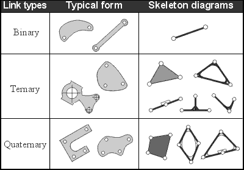
图 L1-1 构件的类型：二副（binary）、三副（ternary）、四副（quaternary）构件及机构简图画法（L1 课件）
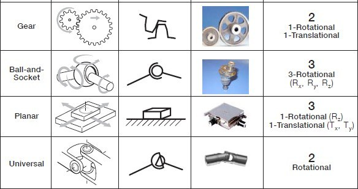
图 L1-2 运动副的类型与自由度：齿轮副、球面副、平面副、万向副（L1 课件）
1.3 运动简图（kinematic diagram）
【课件】"We draw kinematic diagrams to reduce mechanisms into a simpler form so we can analyze them."
把真实机器"抽象"成线条和符号：
- 只保留与运动有关的尺寸（杆长、铰点位置、偏距、半径）；
- 忽略外形、质量、材料、驱动方式；
- 转动副画小圆圈，移动副画滑块 + 导轨，机架画斜线。
【说明】画简图是自由度计算和位置分析的第一步。考试若给实物图，第一步永远是"先画简图、标号"，这一步本身就有分。
1.4 四杆机构的术语（务必按这套记号）
| 符号 | 名称 | 说明 |
|---|---|---|
| 1 | 机架 ground / frame | 永远标 1 |
| 2 | 输入构件 input link（曲柄 crank 或摇杆 rocker） | 未说明时取左边那根 |
| 3 | 连杆 coupler | 不直接与机架相连，作平面运动 |
| 4 | 输出构件 follower（摇杆） | 与机架相连的另一根 |
| $a,b,c,d$ | 各杆长度 | 常用 $a=AB$（输入）、$b=BC$（连杆）、$c=CD$（输出）、$d=AD$（机架） |
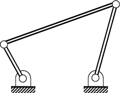
图 L1-3 四杆机构的四个构件：机架 1、输入 2、连杆 3、从动件 4（L1 课件）
2 自由度：Gruebler–Kutzbach 公式
2.1 公式与推导
【课件】
- $M$：自由度（mobility, DOF），= 完全确定机构位置所需的独立输入数；
- $L$：构件总数（含机架）；
- $J_1$：1 自由度运动副的个数；
- $J_2$：2 自由度运动副（半副/高副）的个数。
推导（课件第 29 页）：
- 平面内每个自由构件有 3 个自由度（2 个移动 + 1 个转动）；
- 机架不动，减去 1 个构件：$3(L-1)$；
- 每个 $J_1$ 允许 1 个相对自由度、去掉 2 个约束；
- 每个 $J_2$ 允许 2 个相对自由度、去掉 1 个约束。
所以
【考点】2023 期末 Q1 就是按这个思路问的：先数总自由度 $3(L-1)$，再数运动副引入的约束数 $2J_1+J_2$，两者相减。分开写清楚，比只写一个 $M$ 更容易拿分。
2.2 常见运动副归类
| 运动副 | 类别 | 引入约束 | 例子 |
|---|---|---|---|
| 转动副 revolute / pin | $J_1$ | 2 | 铰链、轴承（理想） |
| 移动副 prismatic / slider | $J_1$ | 2 | 滑块、导轨、活塞 |
| 齿轮啮合（两轮） | $J_2$ | 1 | 外啮合、内啮合 |
| 凸轮–尖底/滚子从动件 | $J_2$ | 1 | 凸轮机构 |
| 销槽 pin-in-slot | $J_2$ | 1 | 允许转动 + 相对滑动 |
| 纯滚动（无滑动） | $J_2$ | 1 | 滚子、轮子 |
2.3 三个必踩的坑（课件 30–33 页）
- 三个构件共用一个销轴：必须算成 2 个 $J_1$，否则 $M$ 会偏大 2。
理由：3 个构件在同一销上两两成副，共 2 对。
- 滑块上带铰链：滑块本身是独立构件，不能把它和连杆看成一个。
- 销槽是 $J_2$ 不是 $J_1$：它允许转动 + 滑动两个相对自由度。
2.4 例题：把 $M$ 数出来
(a) 铰链四杆机构：$L=4$，$J_1=4$，$J_2=0$
(b) 曲柄滑块机构：$L=4$（机架、曲柄、连杆、滑块），$J_1=4$（3 个转动副 + 1 个移动副）
(c) 凸轮 + 滚子摆杆（三种假设，答案不同，必须先声明假设）
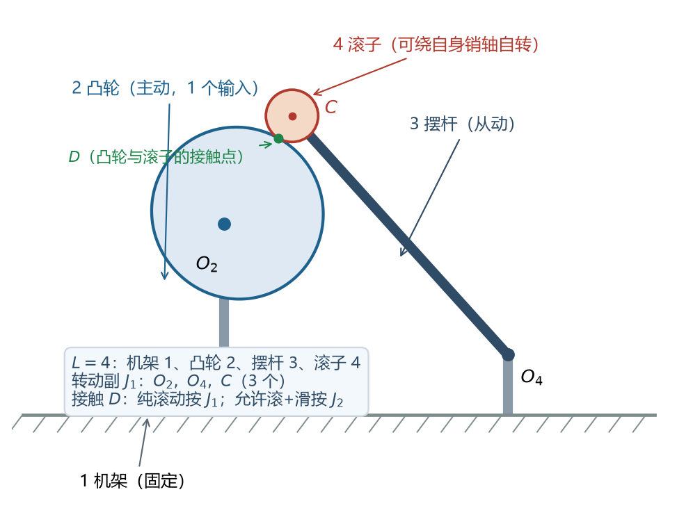
图（自绘）凸轮-滚子摆杆的建模：机架 1、凸轮 2、摆杆 3、滚子 4；接触点 $D$ 的假设不同，$J_1/J_2$ 的记法就不同
| 假设 | $L$ | $J_1$ | $J_2$ | $M$ |
|---|---|---|---|---|
| 滚子与凸轮纯滚动 | 4 | 4 | 0 | 1 |
| 从动件与输出焊成一体（凸轮副允许转+滑） | 3 | 2 | 1 | 1 |
| 凸轮副允许转动 + 滑动（滚子可滑） | 4 | 3 | 1 | 2（含 1 个冗余自由度） |
【说明】课件原话："On any cam and follower problems, state your assumptions!"——凸轮题不写假设，答案无法判对。
为什么同一台机构会有三个答案？ 因为"数几个构件、把接触记成 $J_1$ 还是 $J_2$"是建模选择，不是唯一的：
| 行 | 建模选择 | 结果 |
|---|---|---|
| 1 | 滚子是独立构件，且强制"纯滚动、不滑动"（把无滑动当成约束） | 4 个构件、4 个各去 2 个约束的副 → $M=1$ |
| 2 | 滚子不再独立（与从动件焊成一体），凸轮直接压在从动件上，接触允许滚+滑 | 3 个构件、2 个 $J_1$ + 1 个 $J_2$ → $M=1$ |
| 3 | 滚子是独立构件，接触只是一般高副（允许滚+滑） | 4 个构件、3 个 $J_1$ + 1 个 $J_2$ → $M=2$ |
- 第 3 行多出来的那个自由度是滚子绕自身销轴的自转（局部自由度）：它不影响从动件的运动规律，纯属"空转"。
- 所以把局部自由度剔除后，三行的有效自由度都是 1——与"凸轮转 1 圈、摆杆摆 1 次"的物理事实一致。
- 考试写法：先写"滚子为独立构件/与从动件固连"，再写"接触按纯滚动（$J_1$）还是按高副（$J_2$）"，最后才写 $L,J_1,J_2$ 和 $M$。
【口径提醒】课件第 35 页把"纯滚动"列在 $J_2$（高副）例子里，而第 40 页的凸轮算例又按 $J_1$ 计（$J_2=0$）。两种口径都能自洽：按高副算会得到 $M=2$，扣掉滚子自转的局部自由度仍是 1。答题时二选一、写明假设、前后一致，不要一半按 $J_1$、一半按 $J_2$。
(d) 五杆机构：$L=5$，$J_1=5$
这就是五杆机构不常用的原因：需要两个独立输入（两个电机），控制成本翻倍。
(e) 带齿轮的五杆机构：齿轮副提供 1 个约束（$J_2=1$）
一个输入即可，所以"齿轮五杆"在工程上很常见。
(f) 六杆机构（Watt / Stephenson 型）：$L=6$，$J_1=7$
【课件】2 个三副构件 + 4 个二副构件共有 5 种唯一拓扑：Watt 1、Stephenson 1、Watt 2、Stephenson 2、Stephenson 3。典型应用：假肢膝关节（prosthetic knee）。
2.5 $M<0$：预紧结构
$M<0$ 表示"构件太多、约束过剩"，是预紧结构/桁架，装不上或产生装配应力。课件第 37 页即此例。
2.6 公式失效的两个特例（课件 39 页）
公式只数"拓扑"，不管"几何"，所以特殊尺寸下会算错：
- $L=5$、$J_1=6$ → 公式给 $M=0$，但若 2、3、4 三杆平行且等长，实际能动（瞬时机构）。
- $L=3$、$J_1=3$（2 个铰 + 1 个纯滚动）→ 公式给 $M=0$，但滚子间距与机架铰位置精确匹配时能动。
【记忆】"数出来是 0 却能动"＝几何巧合，属于瞬时自由度/冗余约束，考试遇到要写一句"特殊几何配置导致公式失效"。
3 传动角与死点：力能不能传过去
3.1 传动角 $\mu$（国内教材记作 $\gamma$）
【课件】"It is defined as the acute angle between the coupler and the follower."
物理意义：连杆是二力杆，力沿 $BC$ 方向；把它分解到摇杆上：
说明：$\mu$ 越大，同样大小的连杆力能产生越大的转矩 → 传力性能越好。课件用的 $\mu$ 就是国内教材的传动角 $\gamma$；压力角 $\phi$ 满足 $\mu=90^\circ-\phi$。
3.2 许用范围与后果
【课件】理想范围：
传动角太差的三个后果：
- 机构自锁/卡死（binds，no motion）；
- 铰链受力过大而损坏（关节飞出）；
- 运动方向失控（从死点出来时不知往哪边走）。
3.3 死点与极限位置（toggle positions）
| 共线情况 | 现象 | 说明 |
|---|---|---|
| 输入构件与连杆共线 | 机械效益趋于无穷 | 此时输出速度为零，输入再小的力也能顶住很大的负载；$\mu$ 不一定为 0 |
| 连杆与输出构件共线 | 死点 / 变向点（change point） | $\mu=0$，力全部沿输出杆，无法产生转矩；从该位置出来时方向不确定 |
【坑】"输入与连杆共线"和"连杆与输出共线"是两种不同的共线，结论完全不同：前者是"省力到极致"，后者是"动不了"。考试画图时一定要标出是哪两根杆共线。
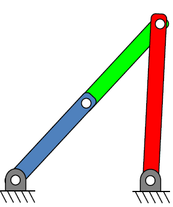
图 L1-4 极限位置/死点：输入与连杆共线（或连杆与输出共线）时的位形（L1 课件）
3.4 例题：$\mu_{\min}$ 怎么算（这台机构后面反复用）
$\mu_{\min}$ 一定出现在曲柄与机架共线的两个位置（$BD=|d-a|$ 或 $d+a$）：
- $BD=d-a=80$：$\cos\angle BCD=\dfrac{120^2+100^2-80^2}{2\times120\times100}=0.75$，$\angle BCD=41.41^\circ$；
- $BD=d+a=180$：$\cos\angle BCD=-0.3333$，$\angle BCD=109.47^\circ$，取补角 $70.53^\circ$。
【说明】一般机械 $[\mu]\ge40^\circ$，高速重载 $[\mu]\ge50^\circ$。这题刚过线，属于"能用但不好"的设计——考试常让你判断"是否需要重新设计"，答案是要，措施是加长机架或调整杆长比。
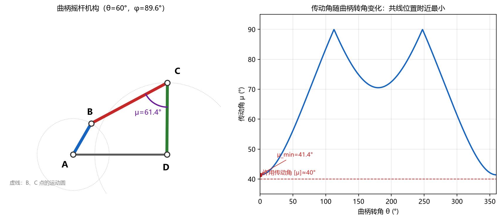
- 左：$\theta=60^\circ$ 时的位形，$\varphi=89.6^\circ$（与 L2 §1.4 的位置分析结果一致），$\mu=61.4^\circ$；
- 右：传动角随曲柄转角的变化，在曲柄与机架共线处取到最小值 $\mu_{\min}=41.4^\circ$。
【说明】画草图时只要画两个共线位置（$BD=d-a$ 与 $d+a$）就够了，$\mu_{\min}$ 必在这两处之一。
3.5 机械效益（mechanical advantage）
【补充】课件没有给公式，但 2023 期末 Q2 直接考了。
- 用转矩写：$MA=\dfrac{T_{out}/r_{out}}{T_{in}/r_{in}}$；
- 用有限位移近似：$MA\approx\dfrac{|\Delta s_{out}|}{|\Delta s_{in}|}$（期末 Q2 就是这么算的：$|Q_i-Q_{i+1}|/|P_i-P_{i+1}|$）；
- 死点附近 $v_{out}\to0$，$MA\to\infty$；反之输出速度最大的位置 $MA$ 最小。
为什么是速度比？ 忽略摩擦时输入功 = 输出功：
所以"省力"必然"费距离"——杠杆、齿轮、四杆都一样，没有白得的力。
四杆机构的 $MA$ 随位置变化（还是那台 $a=50,b=120,c=100,d=130$ 的机构，$MA=\dfrac{v_B}{v_C}=\dfrac{\omega_2 a}{\omega_4 c}$）：
| $\theta$ | 0° | 30° | 60° | 90° | 120° | 150° | 180° | 210° | 240° | 270° | 300° | 330° |
|---|---|---|---|---|---|---|---|---|---|---|---|---|
| $\lvert MA\rvert$ | 0.80 | 4.96 | 1.67 | 1.07 | 1.01 | 1.17 | 1.80 | 4.77 | 9.45 | 2.37 | 1.20 | 0.75 |
- 这台机构的两个极限位置（摇杆速度为零）在 $\theta\approx35.9^\circ$ 与 $229.6^\circ$，那里 $MA\to\infty$；
- 中间段 $MA\approx1\text{–}2$：曲柄转 1 圈、摇杆只转 0.3 圈的同时，力放大 1.7 倍左右；
- 符号只表示方向（摇杆回程时 $\omega_4$ 反号），比较"放大几倍"取绝对值。
【区分】$MA$ 是纯运动学量（忽略摩擦的理想放大倍数）；效率是"输出功/输入功"，含摩擦损失。$MA$ 大的位置（接近死点）效率往往并不高，因为杆件内力很大、摩擦损失也大。
【坑】$MA$ 可以小于 1（增速机构，如自行车高速挡），它只描述"力与速度的交换比例"，不表示机构好坏。
4 平面机构与空间机构
【课件】
- 平面机构（planar）：所有构件在互相平行的平面内运动；
- 空间机构（spatial）：至少有一个构件不平行于同一平面运动。
例子：折叠童车、可翻转沙发床、汽车转向梯形（空间）都是空间机构。本课程只算平面机构的自由度，空间机构只需知道定义与例子。
5 Grashof 判据与四种基本型式
5.1 判据
【课件】设 $\ell_{\min}$ 最短杆、$\ell_{\max}$ 最长杆、$\ell_p,\ell_q$ 为另外两杆：
| 关系 | 名称 | 结论 |
|---|---|---|
| $\ell_{\min}+\ell_{\max}<\ell_p+\ell_q$ | Grashof | 至少一个构件可相对机架整周回转（有曲柄） |
| $\ell_{\min}+\ell_{\max}=\ell_p+\ell_q$ | 变向点机构（change point） | 形式上是 Grashof，但存在"不确定位置/折叠位置" |
| $\ell_{\min}+\ell_{\max}>\ell_p+\ell_q$ | 非 Grashof | 任何构件都不能整周回转（双摇杆） |
5.2 判定流程（30 秒）
- 四个长度排序，找出 $\ell_{\min}$ 和 $\ell_{\max}$；
- 算 $\ell_{\min}+\ell_{\max}$ 与 $\ell_p+\ell_q$ 比较；
- 若满足 Grashof，再看最短杆坐哪把交椅：
| 最短杆是 | 机构类型 | 英文 |
|---|---|---|
| 连架杆（与机架相连） | 曲柄摇杆 | crank-rocker |
| 机架 | 双曲柄（拖动机构） | double-crank / drag-link |
| 连杆 | 双摇杆 | double-rocker |
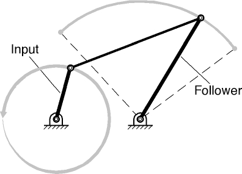
图 L1-5 曲柄摇杆机构：输入曲柄整周回转，从动摇杆往复摆动（虚线为极限位置的圆弧）（L1 课件）
【坑 1】题目只说"四杆长度"，必须说明"以哪根为机架"，否则类型不唯一。
【坑 2】不满足 Grashof 时，无论最短杆在哪，都是双摇杆。
5.3 反演（kinematic inversion）
【课件】"A kinematic inversion is created by grounding a different link... The relative motion between the links is the same in all inversions, while the absolute motion is different."
- 换一个构件当机架，相对运动规律不变，但绝对运动（轨迹、摆角、行程）改变；
- 同一副四杆可以反演出：曲柄摇杆、双曲柄、双摇杆、曲柄摇杆 #2；
- 曲柄滑块、导杆机构、摇块机构、定块机构都是四杆的演化（改变杆长或取不同构件为机架），不是新机构。
5.4 变向点与平行四边形（课件 51–54 页）
- $\ell_{\min}+\ell_{\max}=\ell_p+\ell_q$ 时，机构经过"变向点"（change point）时装配形式不确定，可能翻到另一支路（折叠位置）。
- 平行四边形机构：两连架杆等长、连杆与机架等长 → 连杆始终平行于机架，两连架杆同步整周回转。
- 反平行四边形（anti-parallelogram）：经过变向点后翻到交叉装配，是典型的变向点机构，工程上要靠错列相位或加惯性/辅助杆来避免。
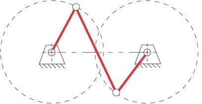
图 L1-6 平行四边形与反平行四边形：经过变向点后翻到交叉装配（L1 课件）
5.5 例题
- 若 $1.0$ 为机架 → 双曲柄；
- 若 $1.0$ 为连架杆 → 曲柄摇杆；
- 若 $1.0$ 为连杆 → 双摇杆。
【课件例题 #2】把两根杆互换，杆长集合不变，所以仍然是 Grashof，只是类型可能改变——这正是"最短杆位置决定类型"的最好例子。
6 分析与综合（analysis vs synthesis）
【课件】
- 分析 Analysis："Given this mechanism, calculate the mechanical advantage, velocity of point P, etc."
- 综合/设计 Synthesis："Design a mechanism to satisfy these objectives."
三类综合问题（必背，简答题常考）：
| 类型 | 要求 | 典型提法 |
|---|---|---|
| 轨迹生成 path generation | 连杆上一点走过给定曲线 | 不要求姿态、不要求时间对应 |
| 刚体导引 motion generation | 连杆依次到达若干位置 + 姿态 | 给 2 或 3 个位置 |
| 函数生成 function generation | 输入角与输出角满足给定函数关系 | 给若干对 $(\theta_i,\varphi_i)$ |
【说明】L2 的图解法/解析法主要解决前两类；函数生成在 L2 末尾用 Freudenstein 方程补充。
7 图解法综合（L1 后半 + L2 前半）
7.1 两个位置：中垂线法（perpendicular bisector）
已知连杆两个位置 $A_1B_1$、$A_2B_2$，求固定铰 $A_0,B_0$：
- 连 $A_1A_2$，作其中垂线（PB）；
- 在中垂线上任取一点作为 $A_0$；
- 对 $B_1B_2$ 同样操作得 $B_0$；
- 连 $A_1A_0$、$B_1B_0$ 即得两连架杆。
术语（课件 69 页）：
- $A_1$ 是圆点（circle point）：它绕 $A_0$ 作圆弧运动；
- $A_0$ 是圆心点（center point）：固定铰；
- 两条中垂线的交点 $P_{12}$ 叫转动极点（rotopole）：把连杆在该点铰接到机架上，也能实现同样的两位姿运动。
7.2 三个位置：两中垂线交点
3 个不共线点唯一确定一个圆，所以：
- 作 $A_1A_2$、$A_1A_3$ 的中垂线，交点即 $A_0$；
- 对 $B$ 点同样操作得 $B_0$；
- 连 $A_1A_0$、$B_1B_0$ 得机构。
【说明】作图题要保留作图线（课件原话：show your work, do not erase your construction lines），并把 $A_0,B_0$ 落在题目给的"机架允许区域"内。
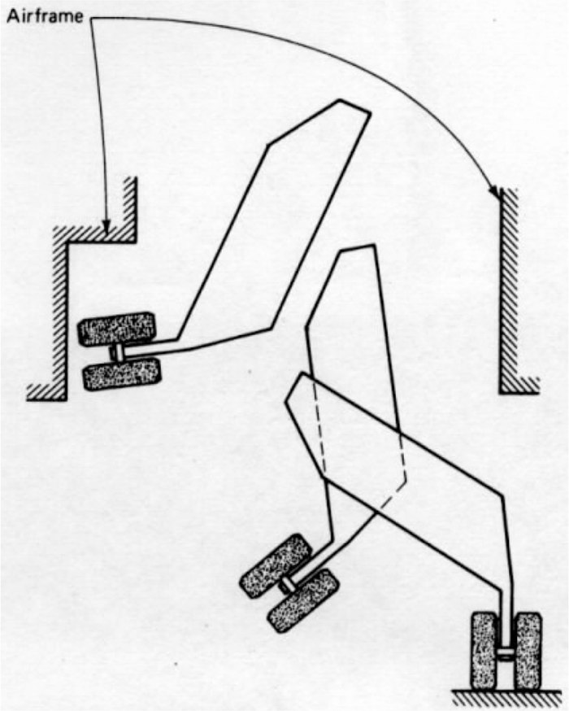
图 L1-7 刚体导引的三个位置：机架铰必须落在允许的机身区域内（L1/L2 课件，期末 Q4 同类题）
7.3 自由选择数（考点）
| 给定位置数 | 每侧自由选择 | 总数 | 来源 |
|---|---|---|---|
| 2 个位置 | 3 | 6 | 动铰坐标 $(x,y)$ 2 个 + 固定铰在中垂线上的位置 1 个 |
| 3 个位置 | 2 | 4 | 动铰坐标 $(x,y)$ 2 个 |
7.4 图解法的困难 → 为什么要解析法
- 全靠"线画得直不直、垂不垂直"，精度取决于手；
- 每次迭代都要重画，很慢；
- 有 4–6 个自由选择，需要反复试。
所以课件紧接着讲解析（代数）综合。
8 解析综合的数学准备（为 L2 铺垫）
8.1 复数矢量
向量 $\vec W=w\,e^{i\phi}$；乘 $e^{i\beta}$ 等于逆时针转 $\beta$：
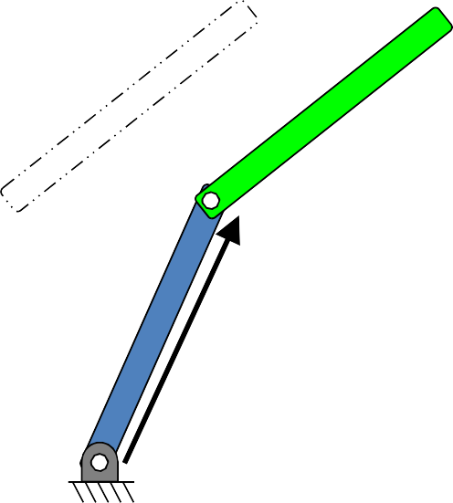
图 L1-8 乘 $e^{i\beta}$ 等于把向量逆时针转 $\beta$（L1 课件）
8.2 Cramer 法则
要求：方阵 + 满秩（行列式不为 0）。
【说明】解析综合里所有"解线性方程组"的步骤，本质都是 Cramer 法则；MATLAB 里就写成
det(A)/det(C)。
9 这一讲可以"带过"的内容
以下只在选择题/名词题里出现，记住一句话即可：
- 柔顺机构（compliant mechanism）：用弹性变形代替铰链，零刚度/双稳态结构；
- 微型机构、可重构机构：MEMS 与变体结构；
- 着陆架、折叠童车、沙发床：空间机构/多杆机构的应用实例；
- 纸板机构设计：课堂动手练习，不考。
10 易错点清单
- 数自由度时，三个构件共销 = 2 个 $J_1$；滑块带铰链时滑块算独立构件。
- 高副（齿轮、凸轮、纯滚动、销槽）是 $J_2$，只去掉 1 个约束。
- 凸轮题必须先声明假设，否则 $M$ 不唯一。
- $M<0$ 是预紧结构；$M=0$ 但能动是特殊几何，要注明公式失效。
- 传动角是连杆与输出杆的夹角（取锐角），不是压力角。
- $\mu_{\min}$ 在曲柄与机架共线的两个位置取小，两个都要算。
- Grashof 判据是 $\ell_{\min}+\ell_{\max}\le\ell_p+\ell_q$，不是"任意两边之和大于第三边"。
- 类型由最短杆的位置决定；不满足 Grashof 一律双摇杆。
- 反演改变绝对运动，不改变相对运动。
- 图解法两个位置的自由选择是 6 个，三个位置是 4 个。
11 自测（5 分钟）
- 机构 $L=6$、$J_1=7$、$J_2=0$，求 $M$，并说出总自由度与总约束数。
- 三个构件在同一销轴上，若只记 1 个 $J_1$，算出的 $M$ 会偏大多少？
- $a=40,b=90,c=70,d=80$，判断类型（已知 $a$ 为连架杆、$d$ 为机架）。
- 上题中求 $\mu_{\min}$，并判断是否满足 $[\mu]=40^\circ$。
- 为什么"输入与连杆共线"时机械效益趋于无穷，而"连杆与输出共线"时机构动不了？
答案见《08 模拟卷答案》附录。
L2 四杆机构的分析与综合
课件结构（L2_4barLinkage_design，47 页）：
- 分析：给定机构，求位置、速度、机械效益（Norton《Design of Machinery》第 4 章）
- 综合：图解法（中垂线）+ 解析法（复数矢量、二元组 dyad）
- 最后给出"同一个问题用不同计算框架求解"的路线图，对应四次作业的演进
L1 讲"怎么判断"，本讲讲"怎么算、怎么设计"。位置分析、速度分析、三点导引的解析式是这一讲的核心公式。
0 课件页码 → 本节
| 课件页 | 内容 | 本节 |
|---|---|---|
| 1–2 | 四杆机构位置分析（"注意有两个解"） | 1 |
| 3–8 | 综合问题分类、刚体导引实例 | 4 |
| 9–17 | 两个/三个位置图解法、圆点与圆心点、自由选择数 | 4 |
| 18–25 | 复数、Euler 公式、Cramer 法则 | 3 |
| 26–35 | 标准二元组（dyad）、三位姿解析综合、Cramer 解 | 5 |
| 36–44 | 算例（船体导引）、MATLAB 代码、迭代 β | 6 |
| 45 | 四种计算框架（线性→fsolve→fmincon→lsqnonlin） | 7 |
| 46–47 | 作业 2 说明 | 8 |
0.1 符号表（本讲专用）
| 符号 | 含义 | 单位 |
|---|---|---|
| $\theta,\ \psi,\ \varphi$ | 输入杆 / 连杆 / 输出杆的方位角（都从 $+x$ 逆时针） | ° |
| $a,\ b,\ c,\ d$ | 四杆长度（与 L1 一致） | mm |
| $\omega_2,\ \omega_3,\ \omega_4$ | 输入 / 连杆 / 输出构件的角速度 | rad/s |
| $W,\ Z$ | 二元组的两个复矢量（连架杆 / 描点臂） | mm |
| $P_j$ | 第 $j$ 个位置的精确点（课件记 $PP_j$） | mm |
| $\delta_j$ | 精确点位移 $P_j-P_1$ | mm |
| $\beta_j$ | 连架杆从位置 1 到 $j$ 的转角增量 | ° |
| $\alpha_j$ | 连杆从位置 1 到 $j$ 的转角增量 | ° |
| $k_1,k_2,k_3$ | Freudenstein 系数 | — |
| $\Delta$ | 行列式（Cramer 法则的分母） | — |
| $\mathbf{x}$ | 设计变量向量 | — |
| $\mathbf{r}$ | 残差向量 | — |
| $w_r$ | 闭环方程的权重 | — |
| $\mathbf{t}_i$ / $\mathbf{P}_i$ | 第 $i$ 个目标点 / 计算得到的描点 | mm |
| $\gamma$ | 作业里描点臂与连杆的夹角 | ° |
| $\ell_2,\dots,\ell_5$ | 作业中的各杆长 | mm |
| $N$ | 采样点数（作业 $N=10$） | — |
【命名规则】本讲的 $\alpha_j$ 是连杆转角增量，不是压力角；压力角统一记 $\phi$（见 L3–L5）。$K$ 只表示行程速比（L1），Freudenstein 系数一律小写 $k$。
1 位置分析：为什么"有两个解"
1.1 闭环矢量方程
以 $A$ 为原点，四杆闭环 $A\to B\to C\to D\to A$：
- $a=AB$（输入杆），$b=BC$（连杆），$c=CD$（输出杆），$d=AD$（机架）；
- $\theta$ 输入角（已知），$\psi$ 连杆方位角，$\varphi$ 输出角。
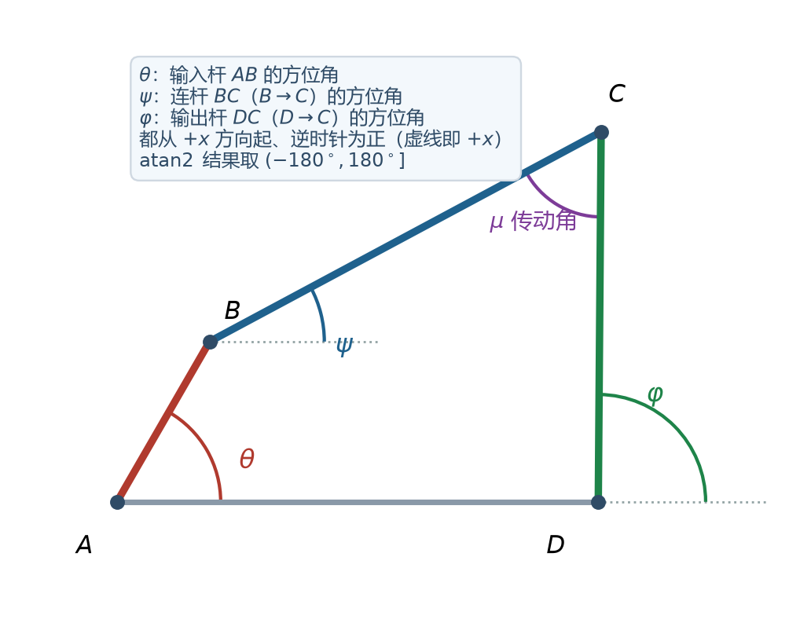
图（自绘）四杆机构的三个方位角：$\theta$、$\psi$、$\varphi$，都从 $+x$ 方向起、逆时针为正
三个角的确切定义（坐标约定：$A$ 为原点，$A\to D$ 沿 $+x$，故 $D=(d,0)$）：
| 角 | 名称 | 定义 | 对应向量 |
|---|---|---|---|
| $\theta$ | 输入角（曲柄转角） | $AB$ 的方位角 | $\vec{AB}=a\,e^{i\theta}$ |
| $\psi$ | 连杆方位角（coupler angle） | 从 $B$ 指向 $C$ 的方位角 | $\vec{BC}=b\,e^{i\psi}$ |
| $\varphi$ | 输出角（follower angle） | 从 $D$ 指向 $C$ 的方位角 | $\vec{DC}=c\,e^{i\varphi}$ |
- 三个角都是绝对方向（相对固定坐标系的 $+x$），不是"两根杆之间的夹角"；
- 实用写法（避免丢象限）：
- $\varphi$ 从 $+x$ 量，而 $A\to D$ 就是 $+x$，所以它也等于"相对机架 $AD$ 的方向"；有些教材从 $D\to A$（$-x$）量，记为 $\varphi'=180^\circ-\varphi$；
- 若把 $\psi$ 定义成 $\vec{CB}$（$C\to B$）的方向，则 $\psi'=\psi+180^\circ$，速度公式的符号会跟着变——全文只能采用一种约定。
【由此推出的三个"相对角"】传动角 $\mu=\lvert\varphi-\psi\rvert$ 取锐角（本例 $\lvert89.56^\circ-28.19^\circ\rvert=61.37^\circ$，与三角形算出的 $\angle BCD$ 一致）；摇杆摆角 $=\varphi_{\max}-\varphi_{\min}$；极位夹角则是两个曲柄位置之差，与 $\psi,\varphi$ 无关，别混。
【课件】"Be aware, there are two solutions."——同一个 $\theta$ 对应两组 $(\psi,\varphi)$，几何上就是"连杆在 $BD$ 的左侧还是右侧"（上装/下装两条装配支路）。
【说明】解析式里的 $\pm$、图解法里的"上方/下方"，说的都是这两条支路。数值解一定有两个，必须按机构简图选对的那一支，否则画出来的机构是"镜像"的。
两条装配支路的严格定义
给定 $\theta$ 后，$C$ 点必须同时满足两个长度约束：
所以 $C$ 是"以 $B$ 为圆心、$b$ 为半径的圆"与"以 $D$ 为圆心、$c$ 为半径的圆"的交点——两圆一般有两个交点，就是两条装配支路（assembly modes）。
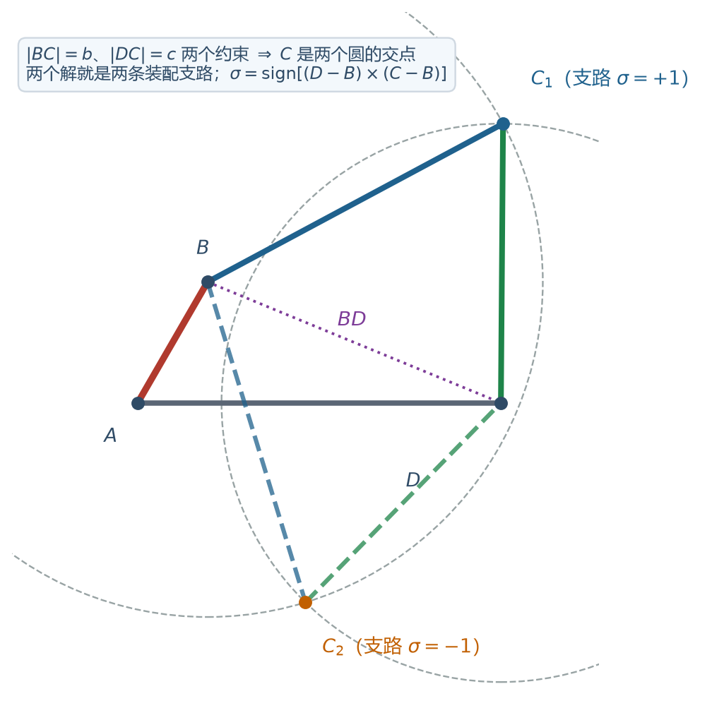
图（自绘）同一 $\theta$ 下的两个 $C$ 解：$C_1$（实线）与 $C_2$（虚线），两解关于直线 $BD$ 镜像
形式化的判别式：令
- $\sigma=+1$ 是一条支路，$\sigma=-1$ 是另一条；
- 等价写法：$\sigma=\operatorname{sign}\sin(\psi-\beta_{BD})$，其中 $\beta_{BD}=\operatorname{atan2}(D_y-B_y,\ D_x-B_x)$ 是 $B\to D$ 的方位角；
- 同一 $\theta$ 下两解关于 $BD$ 镜像：$\lvert\angle CBD\rvert$ 相同，$\psi-\beta_{BD}$ 反号。
例题（$a=50,b=120,c=100,d=130$，$\theta=60^\circ$）
| 支路 | $C$ 坐标 | $\sigma$ | $\psi$ | $\varphi$ |
|---|---|---|---|---|
| 支路 1 | $(130.76,\ 100.00)$ | $+1$ | $28.19^\circ$ | $89.56^\circ$ |
| 支路 2 | $(60.05,\ -71.47)$ | $-1$ | $-73.02^\circ$ | $-134.39^\circ$ |
两条支路的 $\angle CBD$ 都是 $61.37^\circ$（传动角相同），但 $\psi-\beta_{BD}=\pm50.6^\circ$，方向相反。
【"上装/下装"这个叫法的来源与问题】当图上 $AD$ 水平、机构画在 $AD$ 上方时，$C$ 在 $BD$ 上方的那一支被叫"上装"、在下方叫"下装"。这只是画图的俗称：换个画法、换个机架（反演）或镜像一下，"上下"就反了。考试里建议写 $\sigma=\pm1$ 或"支路 1 / 支路 2"，再配一句"按图示取 $C$ 在 $BD$ 上方的那一支"，就不会被判错。
支路会不会中途切换？ 不会，除非机构经过两圆相切的位形——此时 $B,C,D$ 共线、$\mu=0$（变向点/死点），两条支路合并。Grashof 曲柄摇杆在整个循环中 $\mu$ 不会降到 0，所以一旦按某条支路装好，就一直在这条支路上运动。
【综合时的"分支缺陷"（branch defect）】解析综合解出的机构，如果三个精确点分别落在不同支路上，实际机构根本走不到这些位置——这叫分支缺陷。检查办法：把解出的机构从位置 1 开始正算，看 $\sigma$ 是否始终为同一值、$\varphi(\theta)$ 是否连续；若翻号，就重选自由参数（$\beta_2,\beta_3$）再解。
1.2 几何法（考场首选，四步）
已知 $a,b,c,d,\theta$：
【坑】$\operatorname{atan2}(y,x)$ 的参数顺序、$\psi$ 的 $\pm$ 与 $B$ 点坐标的正负号要一致；直接写 $\arccos$ 会丢象限信息。
1.3 代数通式（消去 $\psi$）
把闭环方程两边取模：
展开整理成
令 $t=\tan(\varphi/2)$，得一元二次方程
【说明】根号内 $\lambda_1^2+\lambda_2^2-\lambda_3^2<0$ 表示"该 $\theta$ 下机构装不起来"（超出可达范围），这正好用来判断曲柄能否整周回转：判据与 Grashof 一致。
1.4 例题（本讲通用机构）
两个根给出 $\varphi=-134.39^\circ$（$\sigma=-1$，图示的下装支路）与 $\varphi=89.56^\circ$（$\sigma=+1$，图示的上装支路，按图取这个）。
【验算】此时 $\angle BCD=61.37^\circ$，与 L1 §3.4 在 $\theta=60^\circ$ 处算出的传动角一致——位置分析顺带就把传动角算出来了。
2 速度分析
2.1 矢量方程
- $v_B=\omega_2 a$，方向 $\perp AB$；
- $v_{CB}=\omega_3 b$，方向 $\perp BC$；
- $v_C=\omega_4 c$，方向 $\perp CD$。
对位置方程求导（复数形式最省事）：
取实部、虚部得两个线性方程，解出 $\omega_3,\omega_4$。闭式解：
【说明】分母 $\sin(\varphi-\psi)\to0$ 就是"连杆与输出杆共线"（死点），此时 $\omega_4\to\infty$ 的数学表现。所以死点在公式里表现为分母为零。
2.2 例题
$\theta=60^\circ$、$\omega_2=10$ rad/s（$\sigma=+1$ 支路，即图示上装支路）：
转 1 圈摇杆转 $3.00/10=0.30$ 圈，速比约 3.33；机械效益 $MA=\omega_2 a/(\omega_4 c)\approx1.67$（忽略损失时按力矩比算则再乘杆长比）。
2.3 瞬心法（判断题、快速估算）
三心定理（Kennedy）：三个构件的三个瞬心必在同一直线上。
四杆机构共 6 个瞬心：$P_{12},P_{23},P_{34},P_{14}$ 就在四个铰点处；$P_{13}$、$P_{24}$ 用三心定理求（$P_{13}$ 是连杆与机架的瞬心，也是连杆曲线出现尖点的位置）。
转向由实际运动方向判断（正负号别硬套）。
【作业衔接】你的四杆轨迹综合里，"描点落在瞬心 $P_{13}$ 上 → 描点速度为零 → 轨迹出现尖点"，就是这条定理的直接应用；目标曲线顶点曲率半径很小（0.033）时，用"尖点机构"构造初值最有效。
3 加速度分析（知道方法即可）
- $a_B^n=\omega_2^2a$（指向 $A$），$a_B^t=\alpha_2a$（$\perp AB$）；
- $a_{CB}^n=\omega_3^2b$（指向 $B$），$a_{CB}^t=\alpha_3b$（$\perp BC$）；
- $a_C^n=\omega_4^2c$（指向 $D$），$a_C^t=\alpha_4c$（$\perp CD$）。
两个未知数 $\alpha_3,\alpha_4$，投影到两个坐标轴求解。图解法用加速度影像：同一构件上三点构成的加速度三角形与构件本身相似。
【说明】平面四杆没有移动副，没有科氏加速度；只有曲柄滑块、导杆这类带移动副的机构才有 $a_k=2\omega v_r$。
4 图解法综合（要点回顾）
详细作法见 L1 §7，这里只记"考试怎么写步骤"：
4.1 两个位置
- 连 $A_1A_2$，作中垂线，在其上任取 $A_0$；
- 同法得 $B_0$；
- 连 $A_1A_0$、$B_1B_0$ 即为两连架杆；$A_1B_1$ 为连杆。
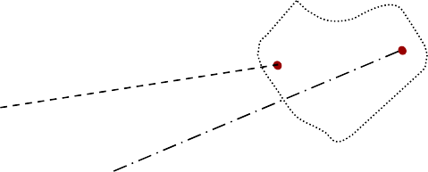
图 L2-1 两个位置的中垂线（PB）作图法：固定铰可在中垂线上任取（L2 课件）
4.2 三个位置
- 作 $A_1A_2$、$A_1A_3$ 的两条中垂线，交点 = $A_0$；
- 作 $B_1B_2$、$B_1B_3$ 的两条中垂线，交点 = $B_0$；
- 连 $A_1A_0$、$B_1B_0$；
- 检查 $A_0,B_0$ 是否落在题目规定区域（如"机架内"），不合格就重选动铰位置。
4.3 必须写进卷子的三句话
- 圆点（circle point）绕圆心点（center point）作圆弧运动，所以中垂线过圆心；
- 两个位置时固定铰可沿中垂线任取（1 个自由选择/侧）；三个位置时交点唯一（只剩动铰的 2 个自由选择/侧）；
- 保留作图线，标注 $A_1,A_2,A_3,B_1,B_2,B_3,A_0,B_0$。
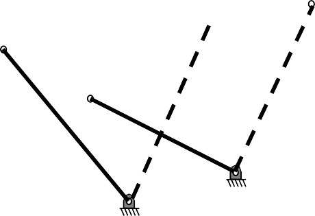
图 L2-2 三个位置：两条中垂线的交点即固定铰，两交点的连线对应动铰的三个位置（L2 课件）
5 解析法综合：标准二元组（dyad）
5.1 为什么叫"二元组"
一个四杆机构可以看成两个二元组：$\vec W_A+\vec Z_A$ 与 $\vec W_B+\vec Z_B$。
- $\vec W$：从固定铰指向动铰的向量（连架杆）；
- $\vec Z$：从动铰指向连杆上精确点 $P$ 的向量；
- 两个 $\vec Z$ 刚性固连，一起构成连杆。
只要每个二元组都能让点 $P$ 到达各精确点并满足姿态，拼起来的四杆当然也能。
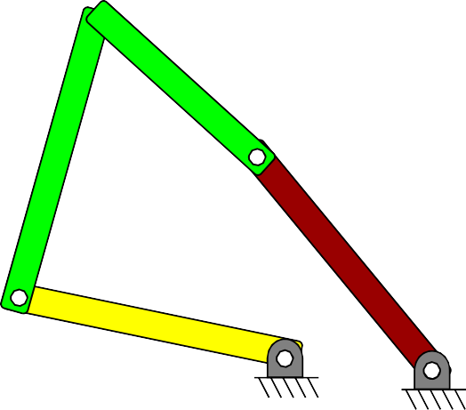
图 L2-3 一个四杆机构由两个二元组（$W+Z$）拼成：两个 $Z$ 刚性固连成连杆（L2 课件）
5.2 参数化
先弄清 $P$ 是什么： $P$ 是连杆上的一个材料点（coupler point），不是铰点。综合问题的原始要求就是"连杆上这个点要走过的若干位置 $+$ 连杆在那些位置的姿态"，所以 $P$ 的坐标是题目给的（量出来或直接给定），不是算出来的；要算的未知量是 $W$ 和 $Z$。
课件把它叫 precision point（精确点），第 $j$ 个位置记作 $PP_j$，所以 $PP_1\equiv P_1$。
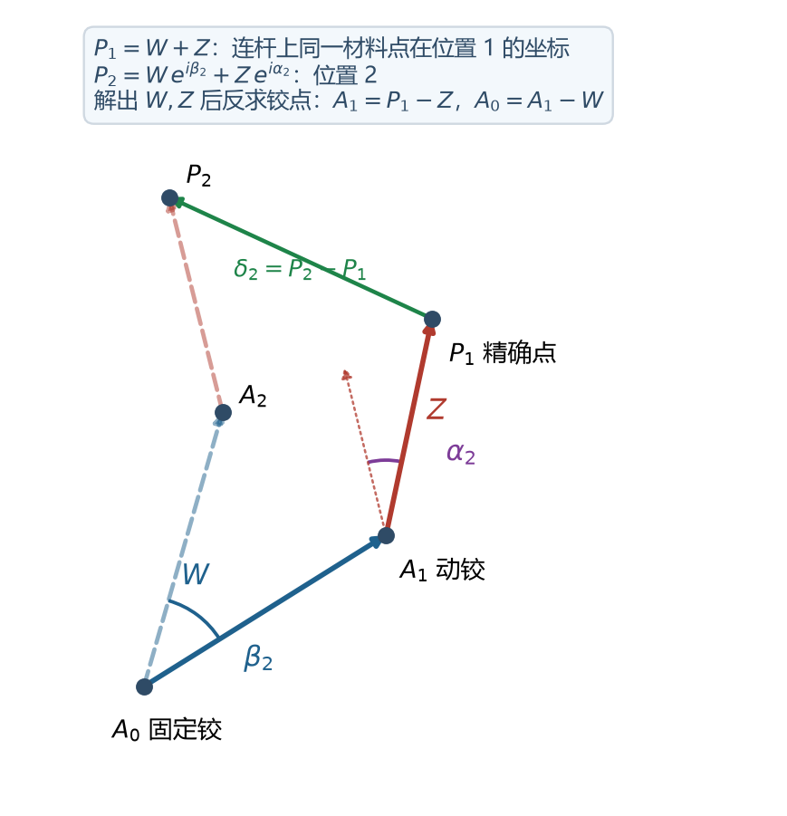
图（自绘）一个二元组 $A_0\!-\!A_1\!-\!P$：$W$ 是连架杆，$Z$ 是"动铰 $\to$ 精确点"的描点臂；位置 2 由 $W$、$Z$ 各自转过 $\beta_2$、$\alpha_2$ 得到
第 $j$ 个位置（$P_j$ 为精确点，$\alpha_j$ 为连杆转角增量）：
其中 $\beta_j$ 是连架杆从位置 1 到位置 $j$ 的转角（自由选择），$\alpha_j$ 是连杆的姿态增量（已知）。
两式相减（消去 $P_1$）：
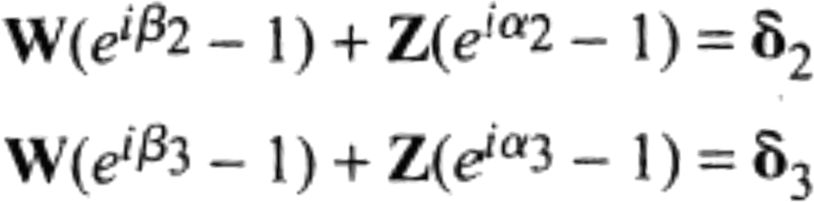
图 L2-4 三位姿的标准二元组方程：$W(e^{i\beta_j}-1)+Z(e^{i\alpha_j}-1)=\delta_j$（L2 课件）
5.3 三个精确点：方程数与自由选择
| 量 | 个数 |
|---|---|
| 未知数 $W$（复数 2）+ $Z$（复数 2）+ $\beta_2,\beta_3$ | 6 |
| 方程（$j=2,3$，每个复数方程 = 2 个实方程） | 4 |
| 自由选择 | 2 |
【课件】"Typically, we choose $\beta_j$'s → linear equations."——选定 $\beta_2,\beta_3$ 后，方程对 $W,Z$ 线性：
5.4 Cramer 法则解（就是 MATLAB 里那三行）
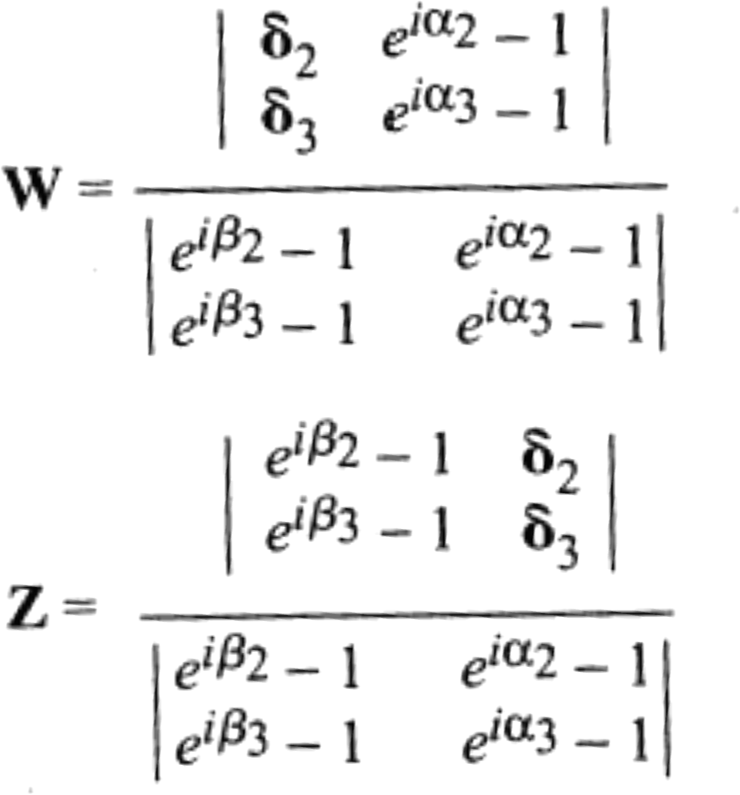
图 L2-5 用 Cramer 法则解出 $W$、$Z$ 的矩阵形式（L2 课件）
5.5 从 $W,Z$ 回到铰点
（$PP_1$ 就是位置 1 的精确点 $P_1$：动铰 = 精确点往回退一个 $Z$，固定铰再往回退一个 $W$。）
（$A_1$ 是连杆上的动铰，$A_0$ 是机架上的固定铰；$B$ 侧同理。）
5.6 算例（船体导引，课件 95–101 页）
已知（量出来的）：
第一次试选 $\beta_2=50^\circ,\ \beta_3=200^\circ$：
另一侧取 $\beta_2=68^\circ,\beta_3=114^\circ$，得 $W=1.4667+1.6873i,\ Z=3.7017-1.2018i$。拼出的机构太大，不能装进机身。
迭代：改选 $\beta_2=77.36^\circ,\beta_3=155.04^\circ$ → $W=1.6880+0.9157i,\ Z=0.5806+0.5114i$；$B$ 侧 $\beta_2=71.11^\circ,\beta_3=152^\circ$ → $W=1.6735+0.9662i,\ Z=0.6728+1.3740i$。"Mechanism is much better."
【说明】这就是解析法的真正用法：β 是自由参数，靠它把机构"调"到能装、尺寸合理、传动角好。求出的解永远有 4 个自由选择（3 点）或 6 个（2 点），"唯一解"是不存在的。
5.7 两个精确点（更自由）
只有一个复数方程：
未知数 5（$W,Z$ 各 2 + $\beta_2$），方程 2 → 3 个自由选择：常先选 $\beta_2$ 和 $Z$（= 指定动铰位置，moving pivot specification），再解 $W$。
6 MATLAB 写法（照抄即可）
deg = pi/180;
beta2 = 50*deg; beta3 = 200*deg; % 自由选择
alpha2 = 11*deg; alpha3 = 0*deg; % 已知
delta2 = 2.54*exp(1i*156*deg); % 注意：必须化成弧度
delta3 = 3.75*exp(1i*196*deg);
A = [delta2, exp(1i*alpha2)-1; delta3, exp(1i*alpha3)-1];
B = [exp(1i*beta2)-1, delta2; exp(1i*beta3)-1, delta3];
C = [exp(1i*beta2)-1, exp(1i*alpha2)-1;
exp(1i*beta3)-1, exp(1i*alpha3)-1];
W = det(A)/det(C); Z = det(B)/det(C);
A1 = -Z; A0 = A1 - W; % 相对 PP1【坑】MATLAB 的
exp(1i*156*deg)里角度必须乘deg；det对复数矩阵有效；算完记得对另一侧再算一遍，两个 dyad 才组成四杆。
7 四种计算框架（这一页是"方法论"，简答常考）
【课件】同一个设计问题，随着"方程/未知数"的比例不同，用不同工具：
| 情形 | 数学性质 | 求解工具 |
|---|---|---|
| 未知数多、方程少 | 欠定非线性 | 给部分变量赋值 → 定解线性系统 → Cramer / 伪逆 pinv |
| 再加约束方程 | 恰定非线性 | fsolve / vpasolve |
| 不加方程、只加"目标"（如总长最小） | 约束优化 | fmincon |
| 方程多于未知数 | 超定非线性 | 最小二乘 lsqnonlin / fminunc |
| 要求同时满足两条分叉路径 | 多目标约束优化 | fmincon（2023–2026 作业） |
【说明】作业 2 的分叉路径设计就是最后一行的情形：不是"解方程"，而是"在满足两条路径约束下让某个指标最优"。
8 你的作业（轨迹综合）怎么讲
题目：给定目标曲线上的 $N=10$ 个采样点 $\mathbf{t}_i$，设计四杆机构，让连杆描点 $P$ 依次经过这些点；不要求姿态、不要求时间对应（path generation without prescribed timing）。
8.1 变量与方程
- 机构参数 9 个（机架、四杆、描点臂夹角、平面位姿 3 个）；
- 每个采样点 1 个自由曲柄转角 $\theta_i$，共 10 个；
- 未知数 19 个。
方程：
- 每个采样点：$\mathbf{P}_i=\mathbf{t}_i$ 给 2 个标量方程 → $2N=20$；
- 每个采样点：摇杆闭环 $|\mathbf{C}_i-\mathbf{D}|=\ell_4$ 给 1 个方程 → $N=10$。
合计 30 个方程 vs 19 个未知数 → 超定，一般无精确解。
8.2 为什么用最小二乘
- 超定 → 只能求残差平方和最小；
- 闭环方程加权（$w_r=1000$）保证"机构闭合"这条硬约束近似成立；
- 用
scipy.optimize.least_squares（信赖域反射 trf），等价于 MATLAB 的lsqnonlin。
结果：采样点位置误差标准差 $\sigma\approx1.5\times10^{-3}$，约为曲线拱高的 $0.01\%$。
8.3 三个必答问题
- "为什么方程比未知数多？"——每个点给 2 个位置方程，只新增 1 个自由转角，净多 1 个约束；$N=10$ 就多 10 个。
- "为什么用最小二乘而不是解方程？"——超定 + 目标曲线顶点接近尖点，精确解可能不存在；最小二乘给出残差意义下的最优折中。
- "若给定 timing 会怎样？"——每个点不再有自由 $\theta_i$，只剩 9 个机构参数对 30 个方程，超定程度更大，只能近似。
9 补充：函数生成与 Freudenstein 方程
【补充】课件只提了"function generation"这一类，没给公式；国内教材和 Norton 都用 Freudenstein 方程，考试若考"按两连架杆对应位置设计"就是它。
由闭环方程消去连杆方位角：
给三对对应位置 $(\theta_i,\varphi_i)$，得到三个线性方程：
解出 $k_1,k_2,k_3$ 后，任选 $a$（尺度自由），回代：
例：三对位置 $(30^\circ,86.60^\circ)$、$(60^\circ,90.63^\circ)$、$(90^\circ,102.65^\circ)$，取 $a=40$ mm：
校验：$40+110=150\le100+80=180$，满足 Grashof，且最短杆 $a$ 为连架杆 → 曲柄摇杆。
【说明】这三对位置本来就是由 $a=40,b=100,c=80,d=110$ 正算出来的，所以能精确还原——用它验证你的公式有没有写错。
10 易错点清单
- 位置分析有两条装配支路，数值解两个都要算，按图选。
- $\operatorname{atan2}$ 的参数顺序是 $(y,x)$，不是 $(x,y)$。
- 速度公式的分母 $\sin(\varphi-\psi)=0$ 对应死点，不是"算错了"。
- 瞬心法里 $\omega_3/\omega_2$ 的比值方向别搞反，转向靠运动方向判断。
- 解析综合的 $\beta_j$ 是自由参数，不是未知数；选得不好会出现"机构太大/杆长负值"。
- Cramer 法则要求行列式不为 0；$\beta_2=\beta_3$ 或 $\alpha_2=\alpha_3$ 时会退化。
- $A_1=PP_1-Z$、$A_0=A_1-W$ 的符号别写反（$Z$ 从动铰指向 $P$）。
- 超定问题不要硬解，直接最小二乘；欠定问题先固定自由参数再解线性。
- Freudenstein 里 $a$ 可任选，说明解有尺度自由度。
- 轨迹综合的 19/30 是"变量投影后"的数；保留闭环中间变量 $\varphi_i$ 时是 29/30。
11 自测（5 分钟）
- 写出四杆闭环矢量方程，并说明为什么位置分析有两个解。
- $a=50,b=120,c=100,d=130$、$\theta=60^\circ$，求 $\varphi$（取 $\sigma=+1$ 支路）。
- 三位姿解析综合中，未知数、方程、自由选择各几个？通常固定哪两个量？
- 写出 $W,Z$ 的 Cramer 表达式，并说明如何从 $W,Z$ 得到 $A_1,A_0$。
- 轨迹综合为什么是超定问题？用哪两个数说明。
答案见《08 模拟卷答案》附录。
L3 电机与传动（Transmission, Gears, and Belts）
课件结构（L3_motor_transmission，90 页）：
1 为什么需要传动 → 2 直流电机模型（转矩–转速直线、功率、效率）→ 3 传动比与电机选型
4 齿轮类型 → 5 渐开线与齿轮术语 → 6 轮系（简单/复合/行星）→ 7 谐波、CVT → 8 带与链
这一讲是全课程计算量最大的一讲，期末 Q5、Q6、Q8、Q9 都从这里出。核心只有一条直线和一个传动比。
0 课件页码 → 本节
| 课件页 | 内容 | 本节 |
|---|---|---|
| 1–29 | 为什么传动、直流电机模型、功率、效率、电机选型 | 1–3 |
| 30–35 | 传动的功能块、实例 | 3 |
| 36–53 | 齿轮类型、渐开线、压力角、间隙、基本参数 | 4–5 |
| 54–65 | 简单/复合轮系、惰轮、差速器 | 6 |
| 66–80 | 行星轮系、杠杆类比、算例 | 7 |
| 81–85 | 谐波减速器、CVT | 8–9 |
| 86–90 | 带与链 | 10 |
0.1 符号表（本讲专用，先看再往下读）
| 符号 | 含义 | 单位 |
|---|---|---|
| $V_s$ | 供电电压 | V |
| $I$ | 电枢电流 | A |
| $R_a$ | 电枢电阻 | $\Omega$ |
| $E$ | 反电动势 | V |
| $K_T$ | 转矩常数 | N·m/A |
| $K_b$ | 反电动势常数 | V·s/rad |
| $k_m$ | 机械特性斜率 $K_TK_b/R_a$ | N·m·s/rad |
| $T_m$ / $T_L$ / $T_s$ | 电机转矩 / 负载转矩 / 堵转转矩 | N·m |
| $\omega$ / $\omega_0$ | 角速度 / 空载角速度 | rad/s |
| $n$ | 转速 | rpm |
| $P$ | 功率 | W |
| $\eta$ | 效率 | — |
| $u$ | 传动比 | — |
| $m$ | 模数 | mm |
| $z$ | 齿数（$z_1,z_2$；行星 $z_s,z_p,z_r$；谐波 $z_g,z_f$） | — |
| $P_d$ | 径节（英制） | 1/in |
| $p_c$ | 周节 | mm |
| $d$ / $d_a$ / $d_f$ / $d_b$ | 分度圆 / 齿顶圆 / 齿根圆 / 基圆直径 | mm |
| $a_w$ | 标准中心距 | mm |
| $\phi$ | 压力角 | ° |
| $h_a$ / $h_f$ / $h_c$ | 齿顶高 / 齿根高 / 顶隙 | mm |
| $\varepsilon_\alpha$ | 重合度 | — |
| $\omega_s,\omega_p,\omega_r,\omega_c$ | 太阳轮 / 行星轮 / 齿圈 / 系杆的角速度 | rad/s |
| $u_h$ | 谐波传动比 | — |
【命名规则】课件里同一个字母干好几件事：$N$ 既表示传动比又表示齿数，$P$ 既表示功率又表示径节，$S,P,R$ 表示太阳/行星/齿圈的齿数。本文统一为：传动比 $u$、齿数 $z$、径节 $P_d$、太阳/行星/齿圈齿数 $z_s,z_p,z_r$——和课件对照时按这四个替换读即可。
1 为什么需要传动
【课件】发动机 $800\text{–}6000$ rpm，车轮 $0\text{–}2000$ rpm。传动要做三件事：改转速、改方向、改位置。
功能块：
- 机械功率 $P=T\omega$；理想传动功率不变，所以转矩与转速成反比；
- 实际传动有摩擦、打滑、发热，效率 $\eta<1$，这就是"用传动的代价"。
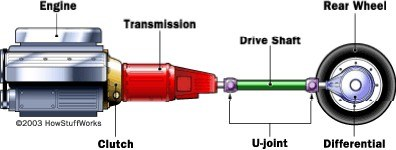
图 L3-1 发动机→离合器→变速器→传动轴→差速器→车轮：转速与转矩要经过传动才能匹配（L3 课件）
2 直流电机模型（本讲的地基）
2.1 三个基本关系
- $V_s$：供电电压；$R_a$：电枢电阻；$I$：电枢电流；
- $K_T$：转矩常数（N·m/A 或 mNm/A）；$K_b$：反电动势常数（V·s/rad 或 V/rpm）；
- 【要点】在同一套单位制下（SI），数值上 $K_T=K_b$；但工程数据表常把 $K_b$ 写成"rpm/V"，此时 $K_b[\text{V·s/rad}]=60/(2\pi K_n)$，其中 $K_n$ 是转速常数（rpm/V，数据表里那一行）。
2.2 机械特性：一条直线
联立三式消去 $E,I$：
【课件】即
| 特征点 | 表达式 | 含义 |
|---|---|---|
| 堵转转矩（stall torque） | $T_s=\dfrac{V_sK_T}{R_a}$ | $\omega=0$，启动瞬间 |
| 空载转速（no-load speed） | $\omega_0=\dfrac{V_s}{K_b}$ | $T=0$ |
| 斜率 | $-\dfrac{K_TK_b}{R_a}$ | 由电机本体决定，与电压无关 |
| 堵转电流 | $I_s=\dfrac{V_s}{R_a}$ | 只由电阻决定，通常是额定电流的数倍 |
【说明】升压时整条直线平行右移（斜率不变）；所以"调压调速"改变的是空载转速，不改变电机的"硬度"。
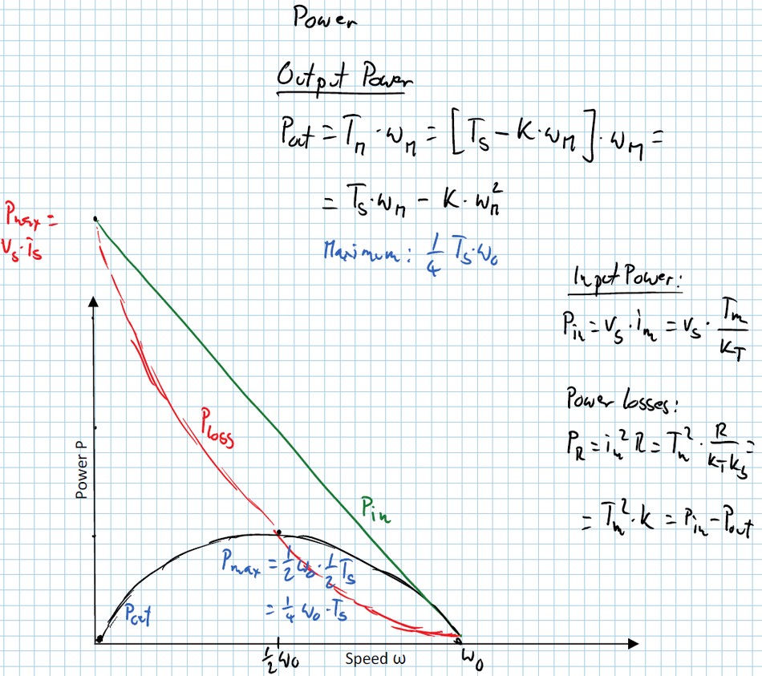
图 L3-2 电机 $T-\omega$ 直线、功率 $P=T\omega$ 抛物线与负载线的交点（课件手绘原图）
2.3 功率、效率、最大功率点
理想情况（忽略铁耗、摩擦）：
效率 = 转速比：转速越低，效率越低；堵转时效率为 0，全部电能变成 $I^2R_a$ 的热。
最大功率点（抛物线顶点）：
此处效率只有 50%，所以"最大功率点"≠"最高效率点"。
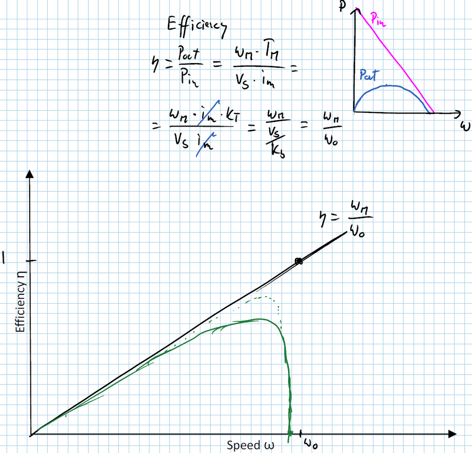
图 L3-3 效率曲线：$\eta=P_{out}/P_{in}=\omega/\omega_0$，高速段效率高、低速大转矩段效率低（课件手绘原图）
2.4 极限在哪里（课件 17–18 页）
| 限制 | 后果 |
|---|---|
| 电流过大 | 绕组过热、绝缘损坏（电气烧毁） |
| 转速过高 | 轴承损坏、电刷打火、振动、离心力（导线甩出） |
| 长时间堵转 | $I^2R_a$ 全部发热，几分钟就烧 |
2.5 例题：电机 118701 + 负载线（课件 15 页原题）
maxon RE16 数据表（12 V 那一列）：$n_0=7130$ rpm，$T_s=18.6$ mNm，$R_a=10.3\ \Omega$，$K_T=16$ mNm/A，转速常数 597 rpm/V，额定 5.48 mNm / 5030 rpm。
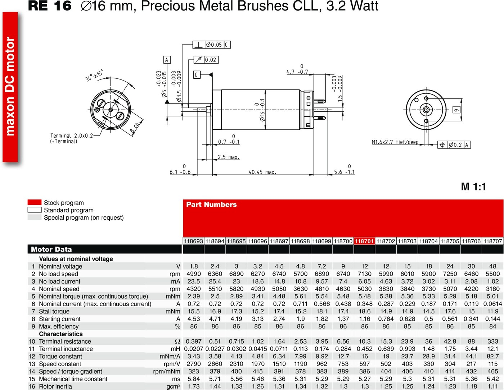
图 L3-4 maxon RE16 数据表（118701 那一列：12 V、7130 rpm、18.6 mNm、10.3 Ω、16 mNm/A）（L3 课件）
换成 SI：
负载线（课件）：$T_L=2+0.001\omega$ mNm。
(1) 标称电压 12 V 时的工作点
此时 $T=2.64$ mNm，$P_{out}=1.69$ W，$\eta\approx\omega/\omega_0=86\%$（与数据表 86% 吻合）。
(2) 想把转速调到 3000 rpm，需要多少电压？
$\omega=314.16$ rad/s 时 $T_L=2+0.314=2.314$ mNm，由 $T=\dfrac{V_sK_T}{R_a}-\dfrac{K_TK_b}{R_a}\omega$ 反解：
【说明】这就是课件那句"You don't have to use the provided nominal voltage"的量化含义：降压就能降速，只要不超电流/转矩上限。
2.6 对照例：$T-\omega$ 图上的两个工作点
另一台电机：$V_s=24$ V、$n_0=8000$ rpm、$R_a=1\ \Omega$、$K_T=K_b=0.02865$ N·m/A。
- 恒转矩负载 $T_L=0.30$ N·m：$0.30=0.688-8.21\times10^{-4}\omega$ → $\omega=472$ rad/s $=4509$ rpm；
- 风机负载 $T_L=2.5\times10^{-6}\omega^2$：解二次方程得 $\omega=385$ rad/s $=3680$ rpm。
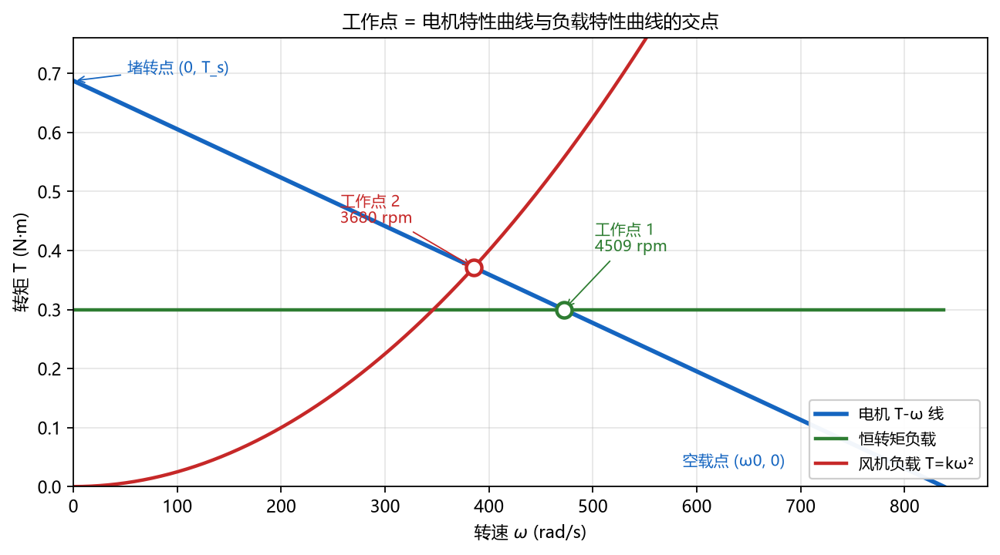
【说明】同一个电机，负载类型不同，工作点就不同：风机负载的工作点更低、电流更大、效率更低。"电机发烫"往往不是电机坏了，是工作点选错了。
2.7 哪台电机更好（课件 20–22 页）
两条 $T-\omega$ 线比较，看两个指标：
- 速度调节率（speed regulation）：负载有 $\Delta T$ 的扰动时，转速跌落
$$\Delta\omega=\frac{\Delta T}{|k_m|}=\Delta T\,\frac{R_a}{K_TK_b}$$ 所以 $R_a/(K_TK_b)$ 越小越好——在 $T$–$\omega$ 图（横轴 $\omega$）上，这对应直线越陡越好（$|k_m|=K_TK_b/R_a$ 越大）。
- 损耗：同样工作点下，$I^2R_a$ 越小越好 → 同样要求 $K_T$ 大、$R_a$ 小。
【课件】"Let's make $K$ as large as possible"——这里的 $K$ 是电机的"单位转速能出多大力"，即 $K_T$（转矩常数）；$K_T$ 大意味着磁钢强、绕组多，代价是贵、重。
【术语与方向】"机械特性硬"= 转速几乎不随转矩变 = 图上接近竖直（陡）；"软"= 平。越硬（越陡）调节率越好，别被"平"字带偏：平直的线意味着负载一变、转速就大幅跌落。
【与效率一致】理想效率 $\eta=\dfrac{1}{1+T R_a/(K_T^2\omega)}$：$R_a$ 小、$K_T$ 大都让效率升高——和"越陡越好"是同一个方向。所以"好电机"的三个说法（$K_T$ 大、$R_a$ 小、特性陡）其实是一件事。
【验算】$K_T=K_b=0.02865$、$R_a=1\ \Omega$ 时 $k_m=8.2\times10^{-4}$；$R_a=3\ \Omega$ 时 $k_m=2.7\times10^{-4}$。负载扰动 $\Delta T=0.1$ N·m：前者 $\Delta\omega=122$ rad/s，后者 $366$ rad/s——陡的那个跌落小。
2.8 负载线 $T_L(\omega)$ 是从哪来的
负载线是被驱动机械的稳态转矩–转速特性，跟电机无关。 电机线是"电机能给出什么"，负载线是"负载需要多少"，两条线的交点才是工作点。
工程上通常写成多项式，每一项对应一种物理机制：
| 项 | 物理来源 | 典型负载 |
|---|---|---|
| $T_0$ | 库仑摩擦、预紧、重力 | 轴承/密封、提升重物、传送带 |
| $k_v\omega$ | 粘性摩擦（油膜剪切、涡流） | 润滑良好的轴系、磁粉制动器 |
| $k_q\omega^2$ | 流体/气动阻力 | 风机、离心泵、螺旋桨 |
| $P_{\text{proc}}/\omega$ | 恒功率工艺 | 卷绕、机床主轴 |
课件里的 $T_L=2+0.001\omega$（mNm，$\omega$ 用 rad/s）就是"$2$ mNm 静摩擦 $+$ 粘性项"的线性化——工程上多数场合只取前两项。
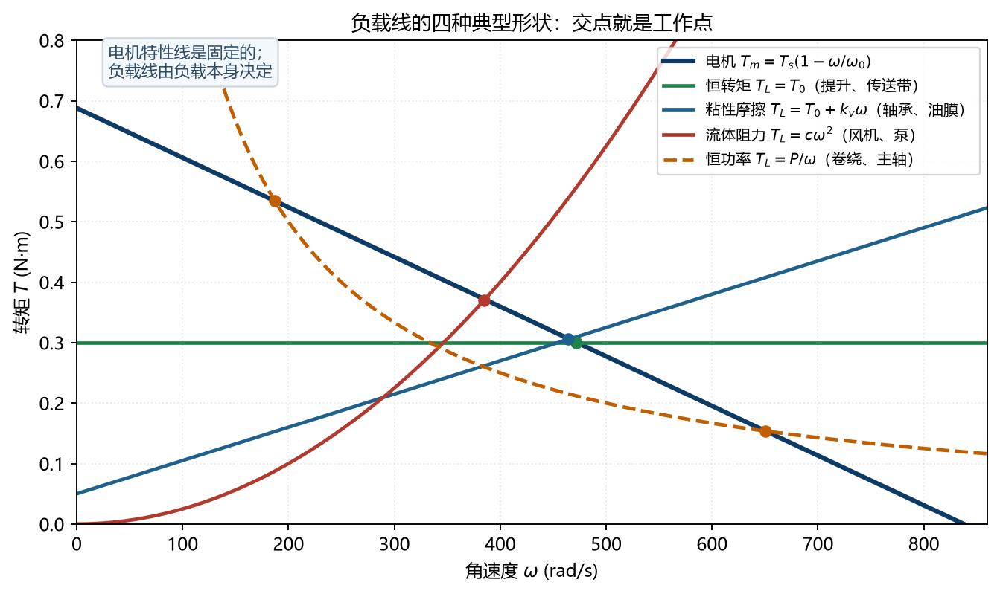
图（自绘）四种典型负载线与同一条电机特性线的交点；恒功率负载有两个交点，只有高速那个稳定
这三类来源怎么得到？
- 实测：测功机加载、或自由停车法测减速度（$T=J\dot\omega$）；
- 由机构算：$T_L=F\cdot r$，$F$ 来自摩擦、重力、切削力——例：提升 $m=2$ kg、卷筒半径 $r=20$ mm，则 $T_0=mgr=2\times9.81\times0.02=0.392$ N·m；再加轴承粘性 $k_v=2\times10^{-4}$ N·m·s/rad；
- 由工艺曲线拟合：给一组 $(\omega_i,T_i)$ 数据，最小二乘拟合上式。
折算到电机轴（加了减速器之后）：
所以常数项被压缩 $u\eta$ 倍、$k_v\omega$ 项被压缩 $u^2\eta$ 倍（因为 $\omega$ 也变成 $\omega_m/u$）。上例加 $u=10$、$\eta=0.9$ 后：$T_m=43.6+2.22\times10^{-6}\omega_m$ mNm——负载线在电机坐标下变平了，这正是减速器"让电机跑在高速小转矩区"的数学表现。
工作点与稳定性：
恒功率负载 $T_L=P/\omega$ 的斜率是 $-P/\omega^2$：低速交点处的斜率比电机线更负（$|dT_L/d\omega|$ 更大）→ 不稳定；高速交点才稳定。
【期末概念题（2023 Q5）】"负载线由谁决定？"——负载（洗衣机），不是电机也不是减速器。减速器只改变它在电机坐标下的斜率与截距，不改变它的物理来源。
【考场识别】题目给负载线通常有三种方式：① 直接给公式 $T_L=A+B\omega$；② 给两点或表格，让你拟合；③ 给负载的物理描述（质量、卷筒半径、摩擦系数、风阻系数），让你自己算 $T=F\cdot r$。如果既没给、也无法从描述算出，就写"设 $T_L=T_0+k_v\omega$"并在卷面声明假设——阅卷看的是你知不知道该由负载决定。
【两个容易踩的点】① 看清负载线是给在负载端还是电机端："external load line" 一般指负载端，代进公式前要先按 $T_m=T_L/(u\eta)$ 折算；② 若负载是连杆/凸轮机构，$T_L$ 随转角周期性变化，不是一条直线——选电机要用一周期的均方根转矩（发热判据）和峰值转矩（能力判据）两个指标。
3 传动比与电机选型
3.1 传动比的定义（课件 24 页）
传动比是运动学量（由齿数/半径决定，与损失无关）：
只有在无损失（$\eta=1$）时，功率守恒才给出转矩关系 $T_o/T_m=u$；有损失时：
即 转矩比 $T_o/T_m=u\eta$，不等于 $u$。$m$ 表示电机侧（motor），$o$ 表示输出侧（output）。
| 传动比 | 转速 | 转矩（理想 $\eta=1$） | 转矩（实际） |
|---|---|---|---|
| $u=2$ | 减半 | 翻倍 | $2\eta$ 倍 |
| $u=1$ | 不变 | 不变 | $\eta$ 倍 |
| $u=0.5$ | 加倍 | 减半 | $0.5\eta$ 倍 |
一般形式：
3.2 为什么不直接升压？
【课件】"Why transmission? Why not just control $V_s$?" 答案：Heat $=i^2R$。
- 要低速大转矩，靠降压 → 电流很大 → 铜耗按平方增长、散热困难、效率极低；
- 用减速器：电机仍工作在高速小转矩的高效区，由减速器把"高速小转矩"换成"低速大转矩"；
- 代价：减速器本身有效率损失（行星 0.9–0.97，谐波 0.7–0.85，蜗杆 0.4–0.8）。
3.3 电机选型两步（课件 26–27 页）
第一步：定需求
- 力/功率需求、能源形式、成本、是否需要速度/位置闭环、开环还是闭环；
- 算出各工作点的 $P,\omega,T$，画到 $T-\omega$ 图上（开环只能取一个工作点）；
- 单位统一。
第二步：选型与迭代
- 用"最大转矩 × 最大转速"估功率等级，按供电电压选电机类型；
- 选减速器把转矩放大到需求；
- 迭代校验：启动瞬态、动态过程、减速器额定转矩、效率、惯量比；
- 效率优先时：大电机 + 小减速比更好；同尺寸下 $K_T$ 大的电机效率高但更贵；
- 很多参数只能离散取值（齿数、电压档位）。
3.4 其他因素（课件 28 页）
成本、功率等级与形式、环境（温度/湿度/光照）、鲁棒性（冲击/振动）、寿命（疲劳/磨损/保修/复杂度）、体积重量、噪声、成熟度、供货。
4 齿轮传动类型
【课件】齿轮："a component within a transmission device that transmits rotational torque by applying a force to the teeth of another gear."
| 类型 | 轴的关系 | 特点 | 典型用途 |
|---|---|---|---|
| 直齿圆柱齿轮 spur | 平行轴 | 最常用；转向相反；$T_{in}\omega_{in}\approx T_{out}\omega_{out}$ | 一般减速器 |
| 斜齿圆柱 helical | 平行轴 | 啮合平稳、噪声小、承载高；有轴向力 | 高速、重载 |
| 锥齿轮 bevel | 相交轴 | 改变 90° 转向 | 差速器、手电钻 |
| 蜗轮蜗杆 worm | 交错轴（90°） | 减速比大、转矩放大明显；效率低；只能蜗杆带蜗轮（自锁） | 卷扬、分度 |
| 齿条齿轮 rack & pinion | 转动 ↔ 直线 | 把旋转变成直线运动 | 龙门机器人、转向器 |
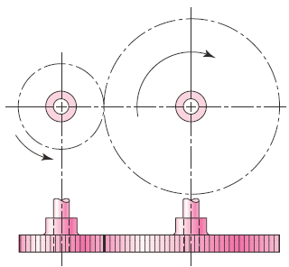
图 L3-5 直齿外啮合：分度圆相切，两轮转向相反（L3 课件）
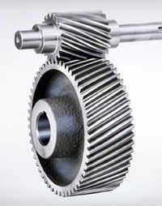
图 L3-6 斜齿轮：啮合平稳、噪声小，但有轴向力（L3 课件）
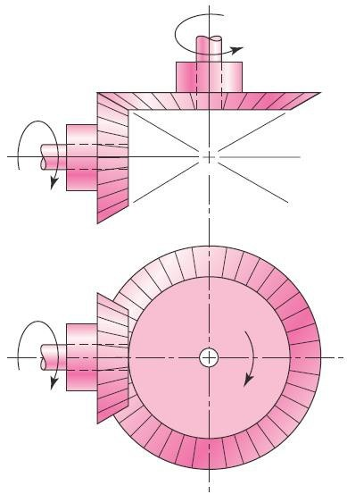
图 L3-7 锥齿轮：相交轴，90° 换向（L3 课件）
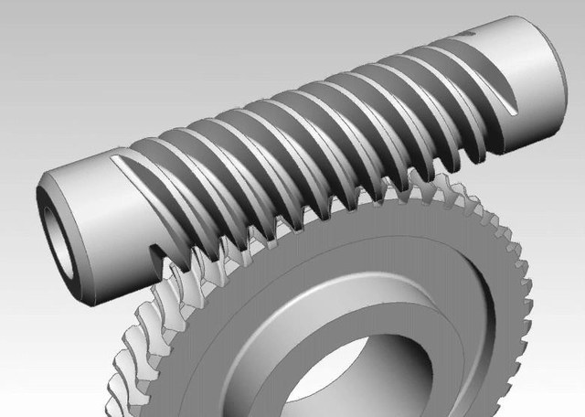
图 L3-8 蜗轮蜗杆：减速比大、可自锁，但效率低（L3 课件）
4.1 圆周速度与传动比
线速度连续（无滑动）：
5 渐开线与齿轮几何
5.1 为什么必须是渐开线（简答必考）
【课件】
- 方齿（矩形齿）啮合时会卡死：接触点法线方向随位置变化，与连心线交点不固定 → 传动比时大时小、有冲击；留间隙则产生回差（backlash）、输出速度不稳。
- 渐开线满足共轭啮合（conjugate action）：接触点公法线始终是两基圆的内公切线，与连心线的交点（节点 $P_w$）固定 → 瞬时传动比恒定。
- 渐开线的生成：一根线绕在圆柱上，松开时线上一点的轨迹。圆柱 = 基圆（base circle）。
- 齿廓在基圆到齿顶圆之间是渐开线；基圆到齿根圆之间是径向直线；基圆内没有渐开线。
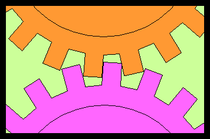
图 L3-9 渐开线的生成：绳绕基圆展开，展开长度等于基圆弧长（L3 课件）
5.2 压力角（pressure angle）
- 啮合线（line of action）$DE$ 与两基圆相切；
- 压力角 $\phi$ = 啮合线与两分度圆公切线 $AB$ 的夹角；
- 标准值 $\phi=20^\circ$（也有 $14.5^\circ$、$25^\circ$）。
| 压力角 | 优点 | 缺点 |
|---|---|---|
| $20^\circ$ | 承载能力高（齿根厚） | 径向力大 |
| $14.5^\circ$ | 中心距误差/同轴度误差引起的回差变化小；重合度大、运转平稳安静 | 承载能力低 |
基圆直径：
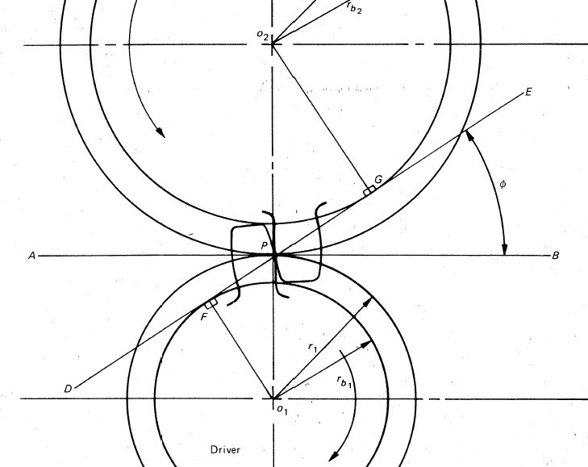
图 L3-10 啮合线 $DE$ 与两基圆相切，它与分度圆公切线的夹角就是压力角（L3 课件）
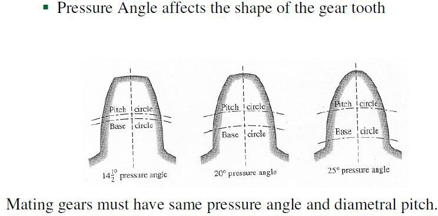
图 L3-11 压力角对齿形的影响：14.5° 齿顶薄而高、20° 常用、25° 齿根更厚（L3 课件）
5.3 间隙（clearance）
【课件】"the distance from the tip of a tooth to the circle passing through the bottom of the tooth space, measuring radially."
- 中心距必须让两分度圆相切；
- 齿顶与齿根之间必须留径向间隙，否则齿顶会顶死、无法转动。
5.4 基本参数（必背）
| 参数 | 符号 | 公式 | 说明 |
|---|---|---|---|
| 齿数 | $z$ | — | 小齿轮叫 pinion，大齿轮叫 gear |
| 分度圆直径 | $d$ | $d=mz$ | 计算基准，两轮分度圆相切 |
| 周节（circular pitch） | $p_c$ | $p_c=\dfrac{\pi d}{z}=\pi m$ | 相邻同侧齿廓在分度圆上的弧长；啮合两轮 $p_c$ 必须相同 |
| 模数（module） | $m$ | $m=\dfrac{d}{z}=\dfrac{p_c}{\pi}$ | SI 的齿大小指标（mm） |
| 径节（diametral pitch） | $P_d$ | $P_d=\dfrac{z}{d}$ | 英制指标（teeth/inch），与模数互为倒数：$m[\text{mm}]=25.4/P_d$ |
| 基圆 | $d_b$ | $d\cos\phi$ | 渐开线的发生圆 |
| 齿顶圆 | $d_a$ | $d+2m$ | 标准全齿高 |
| 齿根圆 | $d_f$ | $d-2.5m$ | 标准全齿高 |
| 标准中心距 | $a_w$ | $a_w=\dfrac{m(z_1+z_2)}{2}$ | 外啮合，两分度圆相切 |
【课件原话】"For a given pitch diameter, the smaller the diametral pitch, the larger the gear tooth."——$P_d$ 越小齿越大；模数 $m$ 越大齿越大，两者互为倒数。
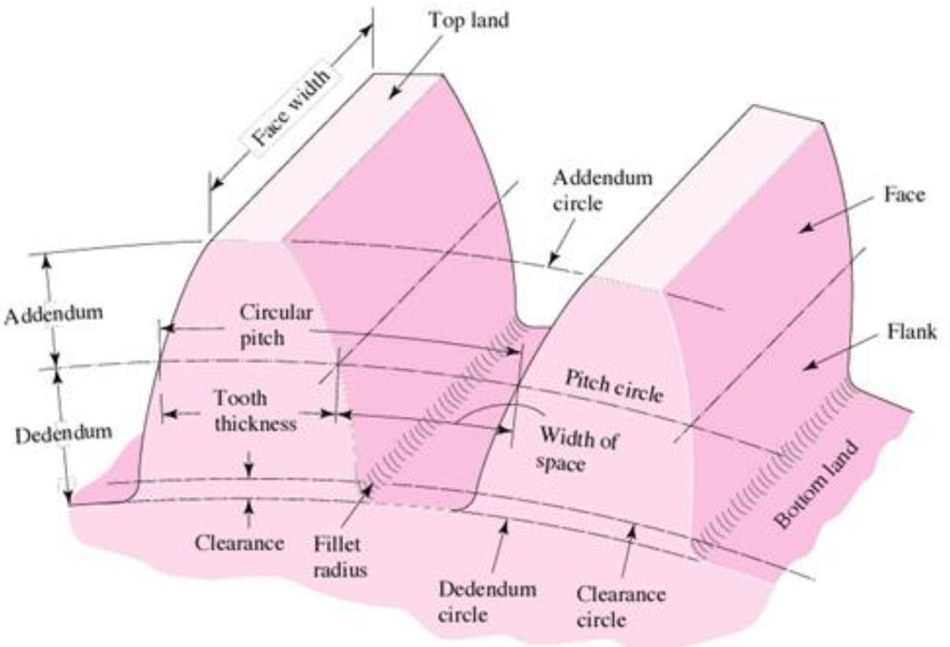
图 L3-12 齿轮几何术语：齿顶高/齿根高/周节/齿厚/齿槽宽/顶隙/工作高度（L3 课件）
5.5 标准全齿高比例（补充，但做题必用）
5.6 啮合与重合度（补充）
正确啮合条件（直齿）：$m_1=m_2$、$\phi_1=\phi_2$。
连续传动条件：重合度 $\varepsilon_\alpha\ge1$。
5.7 例题：$m=3$、$z_1=20$、$z_2=40$（$\phi=20^\circ$，标准全齿高）
| 量 | 小齿轮 | 大齿轮 |
|---|---|---|
| $d=mz$ | 60 | 120 |
| $d_a=d+2m$ | 66 | 126 |
| $d_f=d-2.5m$ | 52.5 | 112.5 |
| $d_b=d\cos20^\circ$ | 56.38 | 112.76 |
| $a_w=m(z_1+z_2)/2$ | 90 | — |
【说明】$\varepsilon_\alpha=1.64$ 表示平均有 1.64 对齿同时啮合；$\varepsilon_\alpha<1$ 会断续啮合、冲击。一般要求 $\ge1.2$（精密传动 $\ge1.4$）。
5.8 根切（补充）
用范成法加工时齿数太少，刀具会切掉齿根渐开线 → 根切，齿根变薄、弯曲强度下降。标准直齿不根切的最小齿数：
$h_a^*$ 是齿顶高系数（正常齿取 1，短齿取 0.8），不带星号时 $h_a$ 是齿顶高的长度。
避免办法：增大齿数、正变位、增大压力角。
6 轮系
6.1 一对齿轮的基本定律
【课件】"Only need to know one equation, and an important variation of it."
负号表示转向相反；内啮合转向相同。
6.2 简单轮系（每根轴一个齿轮）
由于同一模数下 $z\propto d\propto r$，所以也可以写 $=\prod r_{\text{driven}}/\prod r_{\text{driving}}$。
惰轮（idler）：
- 不改变传动比大小（它同时是主动轮和从动轮，在分子分母里抵消）；
- 只改变转向：惰轮个数为奇数 → 与主动轮同向；偶数 → 反向。
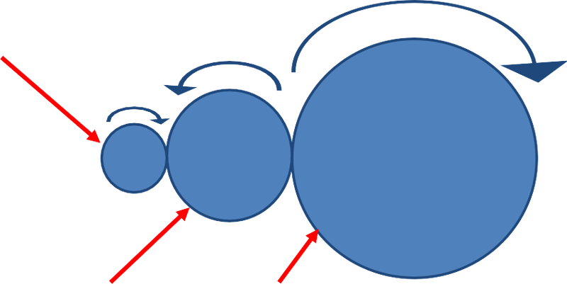
图 L3-13 简单轮系与惰轮：惰轮只改变转向，不改变速比（L3 课件）
6.3 复合轮系（compound train）
- 一对齿轮的传动比实际限制约 10:1；
- 要更大传动比，就把两个齿轮固连在同一根轴上（复合轮系）；
- 传动比 = 各级传动比之积：
转向由各级外啮合次数判定（或逐级画箭头）。
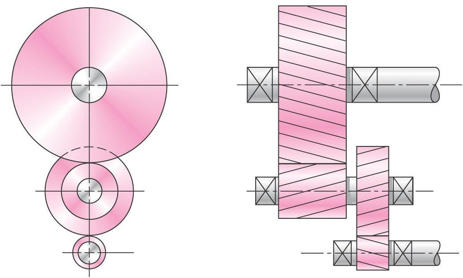
图 L3-14 复合轮系：同轴固连的两个齿轮，传动比为各级之积（L3 课件）
6.4 例题：设计 $u=20$ 的两级齿轮箱（对应期末 Q8）
要求每对齿轮传动比 $<10$，取
- 第一级：$z_1=20$、$z_2=80$ → $u_1=4$；
- 第二级：$z_3=20$、$z_4=100$ → $u_2=5$；
- 取模数 $m=1$ mm：$d=20,80,20,100$ mm；中心距 $a_{w1}=50$ mm、$a_{w2}=60$ mm；
- 总传动比 $u=4\times5=20$，输出转速 $=n_m/20$，输出转矩 $=20\eta T_m$。
【说明】两级中心距不同，所以两根中间轴要分别布置；若要求同轴，需要变位或改用行星轮系。齿数必须取整数，实际传动比会有小数——用 MATLAB 的
[num,den]=rat(x,tol)可以把目标传动比化成整数比（课件 55 页就是这么做的）。
6.5 差速器（differential）
【课件】"A differential allows two output shafts to rotate at different speeds. Torque split is inversely proportional to each wheel speed."——两输出轴可异速，转矩按转速反比分配。
7 行星（周转）轮系
7.1 组成与自由度
四个基本件：太阳轮 sun（齿数 $z_s$）、行星轮 planet（$z_p$）、内齿圈 ring（$z_r$）、系杆/行星架 carrier（角速度 $\omega_c$）。
- 行星轮既自转又"绕太阳轮公转"；
- 两个自由度：必须给定任意两个构件的转向与转速，运动才唯一（常见做法是"固定其中一个"）。
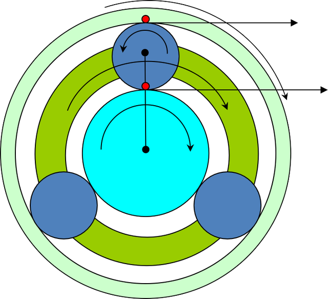
图 L3-15 行星轮系：太阳轮、行星轮、内齿圈、系杆（L3 课件）
7.2 运动学方程（课件 75–77 页）
以齿数表示（同模数下齿数与半径成正比，也可直接用半径）：
两式相加消去 $\omega_p$：
【重要符号约定】课件特别强调：行星轮的正转向与其他构件相反。用 $\omega_p$ 时必须带这个负号，否则方向全错。
7.3 杠杆类比（lever analogy）
把 $(\omega_s,\omega_r,\omega_c)$ 看成一根杠杆上三个点的速度，力臂为 $z_s$、$z_r$、$z_s+z_r$：
三个节点的运动被这条直线约束 → 只有 2 个自由度。
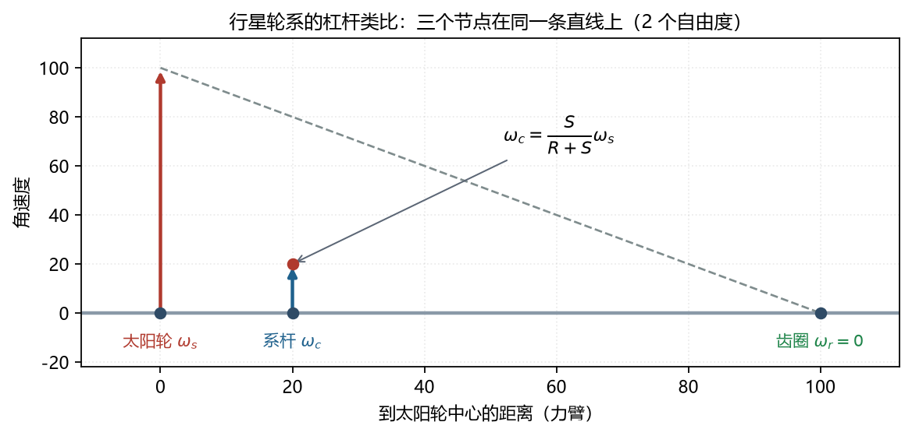
图（自绘）行星轮系的杠杆类比：太阳轮、系杆、齿圈三个节点在同一直线上，速度向量的端点共线
| 固定件 | 输入 → 输出 | 传动比 |
|---|---|---|
| 齿圈固定 | 太阳 → 系杆 | $u_{sc}=1+\dfrac{z_r}{z_s}$ |
| 太阳轮固定 | 齿圈 → 系杆 | $u_{rc}=1+\dfrac{z_s}{z_r}$ |
| 系杆固定 | 太阳 → 齿圈 | $u_{sr}=-\dfrac{z_r}{z_s}$（反向） |
| 无（差动） | 两个输入一个输出 | $\omega_s z_s+\omega_r z_r=\omega_c(z_r+z_s)$ |
7.4 例题（课件 78 页原题）
太阳轮 20 齿，行星轮 30 齿，内齿圈 80 齿（$80=2\times30+20$ ✓）。太阳轮顺时针 100 rpm，齿圈固定，求行星轮（gear 4）的转速与转向。
由杠杆方程（$\omega_r=0$）：
再由 $\omega_r z_r=\omega_c(z_p+z_s)-\omega_p z_p$：
按行星轮的反号约定，实际转向与太阳轮相反 → 逆时针 33.3 rpm。
【验算】用速度法：行星轮中心的线速度 $v_c=\omega_c(z_p+z_s)/2$，与齿圈接触点速度为 0 → $\omega_p^{\text{abs}}=-v_c/(z_p/2)=-\omega_c(z_p+z_s)/z_p=-33.3$，负号即逆时针。两种方法一致。
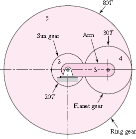
图 L3-16 行星轮系算例：太阳 20 齿、行星 30 齿、齿圈 80 齿（L3 课件）
7.5 行星齿轮箱（课件 72–74 页）
- 同一套行星轮，通过"抱住/松开"不同构件可实现：减速、增速（overdrive）、反转、直接挡（1:1）、空挡；
- 课件那款行星齿轮箱（type A：行星架输出、齿圈固定）有 8 种速比：4:1、5:1、16:1、20:1、25:1、80:1、100:1、400:1，空载转速 23.5–2350 rpm；
- 该型传动比 $u=\dfrac{z_r+z_s}{z_s}=1+\dfrac{D_{\text{ring}}}{D_{\text{sun}}}$；
- 优点：体积小、速比大、多齿同时啮合（承载高）、可多级串联；缺点：结构复杂、齿面受力大（"high applied torques that can strip teeth"）。
8 谐波减速器
【课件】优点：
- 单级减速比大（可达 1:100 以上），结构紧凑、轻、惯量小；
- 多齿同时啮合 → 承载大；
- 无回差（no backlash）、精度高。
组成：波发生器（椭圆凸轮 + 柔性轴承，输入）、柔轮（薄壁杯形外齿，通常输出）、刚轮（内齿圈，通常固定）。
【补充】减速比（刚轮固定、波发生器输入、柔轮输出）：
柔轮固定、刚轮输出时 $u_h=z_g/2$，转向相同。课本不给公式，但谐波"齿数差 2"这个结论要记住。
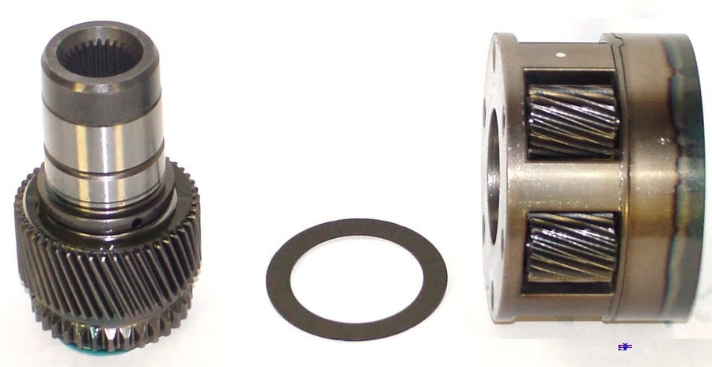
图 L3-17 谐波减速器的三大件：波发生器（椭圆凸轮+柔性轴承）、柔轮（薄壁外齿）、刚轮（内齿圈）（L3 课件）
9 CVT（无级变速）
【课件】"CVTs have no fixed transmission"——靠带轮工作半径连续变化（或钢球/滚轮）实现连续速比，例子：NuVinci。特点是速比连续可调，但效率与承载通常低于齿轮。
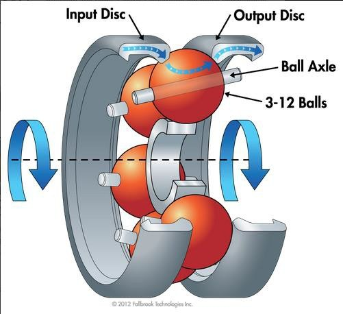
图 L3-18 NuVinci CVT：用钢球/滚轮改变接触半径，实现连续变速（L3 课件）
10 带与链（课件 86–90 页）
10.1 带传动
- 可以自由选择中心距（齿轮做不到），但必须张紧（张紧轮或可调中心距），否则打滑；
- 理想情况下与齿轮同样的关系：
- 能吸收振动、便宜、效率与齿轮接近；缺点是有弹性滑动，传动比不绝对准确。
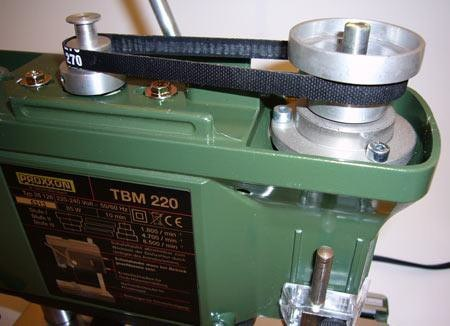
图 L3-19 钻床的带传动：中心距可调、需要张紧（L3 课件）
10.2 链传动
- 便宜、中心距可调、不需要很大张紧力、不易打滑；
- 最常用的是滚子链（roller chain）；传递转矩比带大；
- 长度靠拆装过渡链节/活节（master link）调整；
- 同样有 $\dfrac{T_2}{T_1}=\dfrac{d_2}{d_1}=\dfrac{\omega_1}{\omega_2}$（平均意义）。
10.3 三种传动对比
| 项目 | 齿轮 | 带 | 链 |
|---|---|---|---|
| 传动比准确性 | 准确 | 有弹性滑动（同步带除外） | 平均准确，瞬时波动 |
| 中心距 | 小、固定 | 大、可调 | 较大、可调 |
| 缓冲吸振 | 差 | 好 | 一般 |
| 过载保护 | 无 | 打滑（有） | 无 |
| 效率 | 0.97–0.99 | 0.90–0.95 | 0.95–0.98 |
| 环境 | 需润滑密封 | 怕油、怕高温 | 耐油、耐尘 |
【备注】带的详细设计（欧拉公式、包角、应力）属于 L6 内容，见《09 附录》。
11 易错点清单
- $K_T=K_b$ 只在 SI 下成立；数据表给的是 rpm/V 时必须换算。
- 空载转速≠额定转速；堵转转矩≠额定转矩（堵转只能几秒）。
- 机械特性斜率 $K_TK_b/R_a$ 与电压无关，升压只是平移直线。
- 效率 $\eta=\omega/\omega_0$ 是理想值；实际因铁耗、摩擦更低。
- 传动比的定义是运动学的：$u=\omega_m/\omega_o$（减速时 $u>1$）。$T_o/T_m=u$ 只在无损失时成立。
- 有损失时转矩关系是 $T_o=u\eta T_m$（功率 $P_o=\eta P_i$）；速度比不受 $\eta$ 影响。
- 外啮合变号、内啮合不变号；惰轮只改转向不改速比。
- 复合轮系每对传动比不宜超过 10。
- 行星公式里行星轮符号相反，这是最容易错的一步。
- 谐波减速比是 $z_f/2$（齿数差 2），不是 $z_f$；刚轮固定时输出反向。
- 模数与径节互为倒数，$m[\text{mm}]=25.4/P$，别把两个都当 mm。
- 标准中心距是两分度圆相切，不是两基圆相切。
12 自测（5 分钟）
- 12 V、$n_0=6000$ rpm 的电机，$K_b$（V·s/rad）是多少？
- 上题 $R_a=2\ \Omega$、$K_T=K_b$，求堵转转矩与堵转电流。
- $m=2$、$z_1=18$、$z_2=54$，求 $d$、$d_a$、$d_f$、$a_w$、$u$。
- 复合轮系 $z_1=20,z_2=60,z_3=18,z_4=72$，求总传动比（第一级外啮合、第二级外啮合）。
- 行星轮系 $z_s=24,\ z_p=36,\ z_r=96$，齿圈固定、太阳轮 1200 rpm，求系杆转速和传动比。
答案见《08 模拟卷答案》附录。
L4 设计流程、材料与齿轮几何设计
课件结构（L4_project_designProcedure 33 页 + L4_gears_geometry_force 80 页）：
1 设计流程（Design Process）
2 工程材料与选材（Material Selection）
3 齿轮几何设计（Gear Geometry Design）——与 L3 后半重复，但上升到"设计流程"层面
这一讲是概念 + 常识型考点：设计流程排序、选材因素、强度与刚度的区别、齿轮尺寸计算与画图。
0 课件页码 → 本节
| 课件页 | 内容 | 本节 |
|---|---|---|
| 1–15 | 设计定义、设计流程、IDEO、早期自由度 | 1 |
| 16–33 | 选材因素、材料族、钢/铝/塑料/陶瓷/复合材料、强度 vs 刚度 | 2 |
| 34–53 | 渐开线、压力角、间隙、齿轮基本参数 | 3.1–3.4 |
| 54–65 | 标准齿比例、设计步骤、rat、轮系 | 3.5–3.7 |
| 66–80 | 行星、谐波、带链（与 L3 重复） | 见 L3 |
0.1 符号表（本讲专用）
| 符号 | 含义 | 单位 |
|---|---|---|
| $u$ | 传动比 | — |
| $m$ | 模数 | mm |
| $z$ | 齿数（$z_1,z_2$） | — |
| $P_d$ | 径节 $=z/d$（英制） | 1/in |
| $d,\ d_a,\ d_f,\ d_b$ | 分度圆 / 齿顶圆 / 齿根圆 / 基圆直径 | mm |
| $a_w$ | 标准中心距 | mm |
| $\phi$ | 压力角 | ° |
| $h_a,\ h_f,\ h_c$ | 齿顶高 / 齿根高 / 顶隙 | mm |
| $b_f$ | 齿宽 | mm |
| $E$ | 弹性模量 | MPa |
| $\sigma,\ \sigma_y,\ \sigma_u,\ \sigma_f$ | 工作应力 / 屈服 / 抗拉 / 断裂应力 | MPa |
| $\varepsilon,\ \varepsilon_y,\ \varepsilon_u$ | 应变 / 屈服应变 / 极限应变 | — |
| $w$ | 挠度 | mm |
| $\delta$ | 延伸率 | % |
| $S_e$ | 疲劳极限 | MPa |
【命名规则】齿数用 $z$（不是 $N$），传动比用 $u$（不是 $i$），中心距用 $a_w$（不是 $C$），齿宽用 $b_f$（不是 $F$），顶隙用 $h_c$（不是 $c$）。挠度 $w$ 与延伸率 $\delta$ 是两个不同的量。
1 设计流程
1.1 什么是机械设计
【课件】"Design (also called Synthesis): to define the sizes, shapes, material compositions, and arrangements of parts so that the resulting machine will perform a given task."（Shigley & Uicker）
一句话：定尺寸、定形状、定材料、定布置，使机器完成规定任务。词源 designare = "标出、指定"。
【说明】注意"design = synthesis"：这门课里"设计"和"综合"是同义词（对应 L1 的 analysis vs synthesis）。
1.2 设计流程（顺序必背）
【课件】
- Specification of requirements 需求规格（功能、载荷、速度、精度、寿命、成本）
- Research and benchmarking 调研与对标（现有方案、专利、产品）
- Generation of design concepts 概念生成（头脑风暴，越多越好）
- Concept selection 概念筛选（Pugh 矩阵、加权评分）
- Detailed design 详细设计（尺寸、公差、材料、图纸）
- Modeling and analysis 建模与分析（运动学、强度、仿真）
- Prototype construction and testing 样机与试验
- Final design 定型（出图、BOM、工艺）
【坑】"先详细设计再选方案"是典型错误：概念阶段就要筛选，否则后面全部白做。
1.3 早期自由度最大（课件 12 页）
【课件】"Be creative early. Freedom decreases as more knowledge/cost/details are committed."（Dieter & Schmidt）
- 概念阶段：几乎无限方案，改动成本低；
- 详细设计后：一个尺寸改动会牵动几十张图、模具、工装；
- 所以越早做对方向，越省钱。
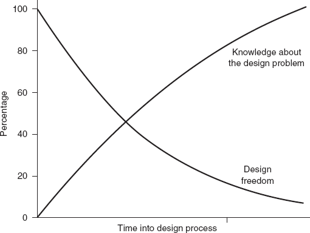
图 L4-1 设计自由度随时间下降：越早改越便宜，后期只能微调（L4 课件）
1.4 IDEO "Deep Dive"（课件 13–14 页）
流程：Problem definition → Information search → Concept generation → Funneling → Prototyping。
【课件】三个观察：
- "Focused Chaos"：看似混乱，但有明确目标；
- "Enlightened trial and error succeeds over the planning of the lone genius."：快速试错优于一个人闭门规划；
- Everyone is equal：不按资历，按想法。
1.5 "任何设计问题都不止一个解"（课件 7 页）
课件用蒙戈菲耶尔热气球与查尔斯氢气球作对比：同样的需求（载人升空），不同的技术路线，各有各的失败方式（"The Destruction of Charles's Balloon"）。结论：方案要多、要早筛、要试。
2 材料选择
2.1 选材要考虑什么（课件 18 页）
| 类别 | 具体指标 |
|---|---|
| 力学 | 强度（yield/ultimate）、刚度（弹性模量）、硬度、韧性/延性、疲劳 |
| 物理 | 密度、热膨胀系数、导热/导电、耐蚀 |
| 工艺 | 可加工性、可焊性、可铸性、热处理性、成本 |
| 功能 | 零件在系统中的角色（承力？密封？绝缘？外观？） |
【课件课堂活动】设计订书机：至少列 4 个材料属性并说明理由（例：弹簧要弹性极限高；机身要刚度高、成本低；钉道要硬度高、耐磨；手柄要绝缘、手感好）。
2.2 四大材料族（课件 32 页）
| 族 | 特征 | 例子 |
|---|---|---|
| 金属 Metals | 延展、韧、导热导电好 | 钢、铝、铜、钛 |
| 陶瓷与玻璃 Ceramics & glasses | 硬、脆、耐蚀、绝缘 | 火花塞、刀具、光学玻璃 |
| 高分子 Polymers（含弹性体、泡沫） | 轻、易成形、柔、绝缘 | ABS、POM、尼龙、橡胶 |
| 复合材料 Hybrids/composites | 两种以上材料组合，各向异性 | 玻纤/碳纤、蜂窝夹层、木材 |
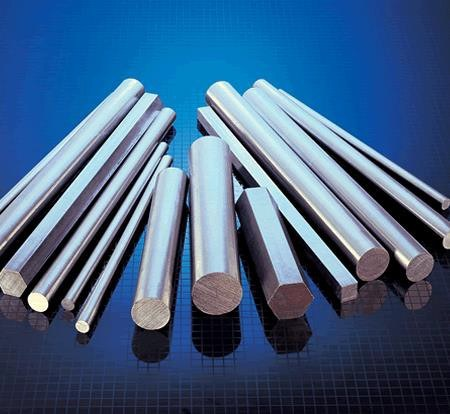
图 L4-2 材料族与性能图（Ashby 图）：金属、陶瓷、高分子、复合材料各占一块区域（L4 课件）
2.3 钢（课件 20–21 页）
成分：铁 + 碳（+ 铬、锰、钒、钨等合金元素）。
| 优点 | 缺点 |
|---|---|
| 强度高、刚度高（$E\approx200$ GPa） | 密度大（约 7850 kg/m³），重 |
| 相对韧（不是脆性材料） | 碳钢会锈，必须防护 |
| 可热处理（调质、淬火、渗碳）改变硬度与性能 | 加工比铝费劲 |
防锈三种常见做法：涂漆、镀锌（galvanizing）、发黑（black oxide）。
常见型材：圆棒、方棒、圆管、方管、角钢、槽钢、工字钢、扁钢。
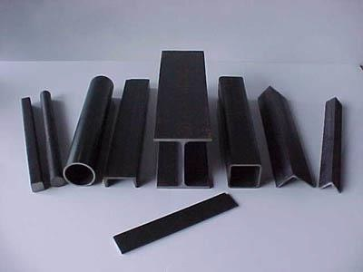
图 L4-3 常见钢材型材：圆棒、方管、角钢、槽钢、扁钢等（L4 课件）
2.4 铝（课件 23 页）
- 比强度高（强度/密度），密度约为钢的 1/3；
- 耐蚀性好（表面自然氧化膜），但持续摩擦会磨掉氧化膜，可阳极氧化（anodizing）；
- 导电导热好；
- 刚度只有钢的约 1/3（$E\approx70$ GPa）——这是最容易记错的点；
- 常合金化（Cu、Si、Mn、Mg），牌号如 6061-T6。
【说明】发动机缸体从铸铁改铝，就是为了减重；但铝的刚度低，所以结构件要靠截面形状（筋、管）补刚度。
图 L4-4 铝合金铸件（进水口）：比强度高、刚度约为钢的 1/3（L4 课件）
2.5 高分子（课件 24–27 页）
| 类别 | 行为 | 例子 |
|---|---|---|
| 热塑性 Thermoplastics | 加热软化、冷却硬化，可反复 | PE、PP、PVC、PS、ABS（乐高）、PMMA（亚克力）、PC（防弹）、POM（Delrin） |
| 热固性 Thermosets | 加热发生化学反应固化，不可逆 | 酚醛（电木）、聚酯、环氧、硅胶、聚氨酯 |
| 弹性体 Elastomers | 大变形可恢复 | 橡胶密封圈、O 型圈 |
应用例子：
- 水龙头出水口：塑料主体 + 黄铜嵌件（螺纹处承力，塑料不承力）——"load limiter"思想；
- 橡胶密封圈：靠弹性变形密封；
- 挑战者号（1986）O 型圈：低温下弹性体失去回弹，密封失效——材料选择与环境温度直接相关。
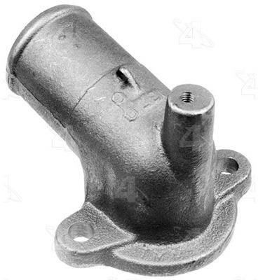
图 L4-5 塑料件（带金属嵌件）：承力部位用嵌件，塑料只做形状（L4 课件）
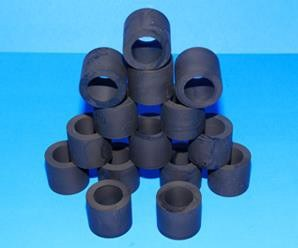
图 L4-6 橡胶 O 形圈：靠弹性变形密封，低温会失去回弹（挑战者号事故）（L4 课件）
2.6 陶瓷与复合材料（课件 28–30 页）
- 陶瓷：火花塞（耐高温、绝缘）、切削刀片（硬质合金）；
- 复合材料：玻璃钢船体、碳纤 + Nomex 芳纶蜂窝夹层（太阳能车）、纤维缠绕压力容器；
- 特点：比强度/比刚度高、可设计性强，但失效模式复杂（分层、纤维断裂）、连接困难、成本高。
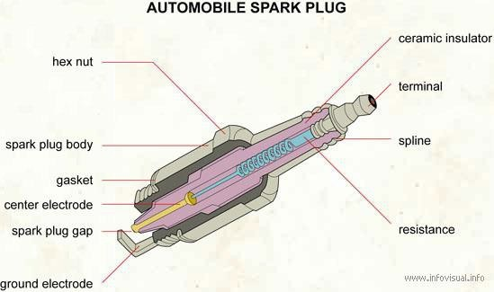
图 L4-7 火花塞：陶瓷绝缘体耐高温、绝缘、耐蚀（L4 课件）
2.7 强度 vs 刚度（必考概念，课件 31、33 页）
| 强度 Strength | 刚度 Stiffness | |
|---|---|---|
| 定义 | 抵抗破坏/屈服的能力 | 抵抗变形的能力 |
| 指标 | $\sigma_y$、$\sigma_u$、$S_e$（MPa） | $E$（MPa）、刚度 $k$（N/mm） |
| 判据 | $\sigma\le[\sigma]$ | $w\le[w]$ |
| 失效形式 | 断裂、屈服、疲劳 | 变形过大、失稳、精度丧失 |
【课件例子】高速公路钢索护栏：要强度（撞不断），但也要刚度（变形不能太大）——两者都可能成为失效模式。
【说明】"强但不硬"是常见组合（如橡胶：强度不高、刚度极低）；"硬但脆"（陶瓷：强度高、韧性差）。选材时先问"这个零件是怕断还是怕变形"。
图 L4-8 钢索护栏：既怕撞断（强度），也怕变形过大（刚度）（L4 课件）
2.8 应力–应变曲线（补充，2023 期末 Q7 原题）
课件只给了材料性能数值（PLA：$E=2500$ MPa、$\sigma_y=50$ MPa、$\sigma_u=60$ MPa、$\sigma_f=45$ MPa、$\varepsilon_y=2\%$、$\varepsilon_u=5\%$），期末要求"用折线画出并标出所有数值"。画法：
- 横轴工程应变 $\varepsilon$（%），纵轴工程应力 $\sigma$（MPa）；
- 原点到屈服点：直线，斜率 $E=\sigma_y/\varepsilon_y=50/0.02=2500$ MPa（先验算一致性）；
- 屈服点到抗拉点：塑性段（略微上升，加工硬化），到 $(5\%,\ 60)$；
- 抗拉点之后：颈缩、下降，到断裂点 $(5\%,\ 45)$；
- 标出 $\sigma_y$、$\sigma_u$、$\sigma_f$、$\varepsilon_y$、$\varepsilon_u$，以及弹性段斜率 $E$。
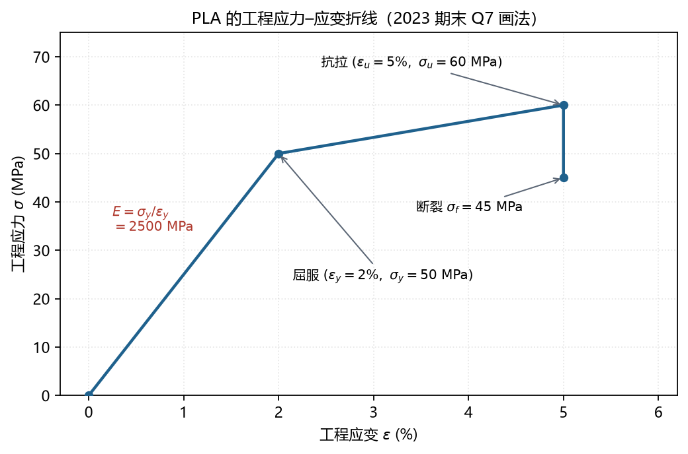
| 特征 | 含义 | 用途 |
|---|---|---|
| 弹性段斜率 $E$ | 刚度 | 变形计算 |
| 屈服强度 $\sigma_y$ | 开始塑性变形 | 静强度设计的主判据（配合安全系数） |
| 抗拉强度 $\sigma_u$ | 最大工程应力 | 质量指标、疲劳极限估算 |
| 断裂应力 $\sigma_f$ | 断裂瞬间 | 脆性材料更关注 |
| 延伸率 $\delta=\varepsilon_u$ | 塑性 | $>5\%$ 一般算塑性材料 |
| 曲线下面积 | 韧性（能量吸收） | 抗冲击 |
【坑 1】$\sigma_y=50$ MPa 且 $\varepsilon_y=2\%$ 时，$E$ 必须是 2500 MPa；若题目给的三个数不自洽，以 $E=\sigma_y/\varepsilon_y$ 为准并在卷面上说明。
【坑 2】题目只给了 $\varepsilon_u=5\%$，没给断裂应变，所以断裂点画在 $\varepsilon=5\%$ 处、应力从 60 竖直降到 45，这是简化画法；真实曲线在颈缩段应变还会继续增加。卷面上注明"简化为在 $\varepsilon_u$ 处下降"即可。
3 齿轮几何设计
3.1 设计输入与输出
| 输入（需求） | 输出（图纸） |
|---|---|
| 传动比 $u$、输入转速/功率 | 齿数 $z_1,z_2$、模数 $m$ |
| 中心距限制、空间限制 | 分度圆/齿顶圆/齿根圆/基圆直径 |
| 载荷（转矩） | 齿宽 $b_f$（由 L5 强度定） |
| 材料与热处理 | 精度等级、公差、表面粗糙度 |
| 寿命、噪声要求 | 装配图（中心距、轴承位置） |
3.2 基本参数（与 L3 §5.4 同一张表，背下来）
【课件】"Pitch circle: a theoretical circle upon which most calculations are based. Pitch circles of a pair of mating gears are tangent to each other."
【说明】分度圆是计算基准，不是真实存在的圆；节圆（pitch circle in mesh）在标准安装时才与分度圆重合。中心距一变，节圆就变，但分度圆不变。
3.3 压力角与间隙（课件 39–42 页）
- 啮合线 $DE$ 与两基圆相切；压力角 $\phi$ = 啮合线与分度圆公切线的夹角；
- $\phi=20^\circ$ 承载高；$14.5^\circ$ 对中心距误差不敏感、重合度大、更安静；
- 间隙（clearance）：齿顶到对方齿根圆的径向距离，标准值 $0.25m$。没有间隙 → 齿顶顶死、发热、卡死。
3.4 标准齿形的比例关系
| 项目 | 公式 | $m=1$ 时 |
|---|---|---|
| 齿顶高 | $h_a=m$ | 1 |
| 齿根高 | $h_f=1.25m$ | 1.25 |
| 顶隙 | $h_c=0.25m$ | 0.25 |
| 全齿高 | $h=2.25m$ | 2.25 |
| 工作高度 | $h_w=2m$ | 2 |
3.5 设计步骤（课件 55 页 "Step by step"）
- 由需求定传动比 $u=n_1/n_2$；
- 把 $u$ 化成整数齿数比（MATLAB：
[num,den]=rat(i,tol)），必要时拆成多级（每级 $<10$）； - 选齿数 $z_1,z_2$（小齿轮齿数不宜太少：标准直齿 $z\ge17$ 免根切；实际常取 18–30）；
- 选模数 $m$（按强度初选，L5 校核；再按标准系列圆整）；
- 算 $d,d_a,d_f,d_b$、中心距 $a_w$；
- 定齿宽 $b_f$（一般 $b_f=(6\text{–}12)m$，由 L5 弯曲/接触强度校核）；
- 选材料与热处理、精度等级；
- 出图（标注 $d_a$、$d$、$d_f$、$b_f$、孔径、键槽、倒角、中心距及公差）。
【坑】齿数必须是整数，所以实际传动比一定与目标有偏差；用
rat找"最接近的整数比"，并检查误差是否在允许范围内（如 ±1%）。
3.6 例题：设计 $u=20$ 的两级齿轮箱
取 $u=20=4\times5$，每级 $<10$：
| 级 | 小齿轮 | 大齿轮 | 传动比 | $m$ | $a_w$ |
|---|---|---|---|---|---|
| 1 | $z_1=20$ | $z_2=80$ | 4 | 1.5 | $75$ mm |
| 2 | $z_3=20$ | $z_4=100$ | 5 | 1.5 | $90$ mm |
总传动比 $u=4\times5=20$，输出转速 $n_{out}=n_m/20$，输出转矩 $T_{out}=20\eta T_m$（$\eta$ 为两级效率之积，约 0.95–0.97）。
【说明】若要"同轴输出"（输入输出同轴线），两级中心距必须相等，需用变位或改用行星/谐波；这是齿轮箱布局的核心约束。
3.7 一张图看懂几何关系
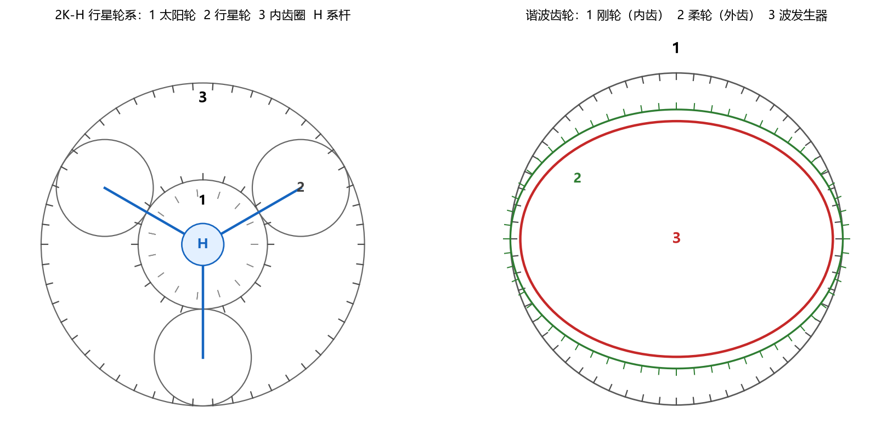
- 上：一对啮合齿轮的分度圆相切、基圆内切于啮合线；
- 下：行星轮系（太阳—行星—齿圈—系杆）与谐波减速器的组成。
4 易错点清单
- 设计流程顺序：需求 → 调研 → 概念 → 筛选 → 详细设计 → 分析 → 样机 → 定型。
- 自由度在概念阶段最大，越往后改动成本越高。
- 铝的密度约钢的 1/3，刚度也约 1/3，强度可通过合金/热处理接近中碳钢。
- 强度≠刚度：一个怕断，一个怕变形，都可能是失效判据。
- 热塑性可反复加热成形，热固性不可逆。
- $d=mz$ 是分度圆；$d_a=d+2m$；$d_f=d-2.5m$；$d_b=d\cos\phi$。
- 中心距 $a_w=m(z_1+z_2)/2$，是分度圆相切，不是基圆。
- 模数与径节互为倒数，单位不同（mm vs teeth/inch）。
- 齿数必须整数，实际传动比与目标有偏差，要检查误差。
- 每级传动比不超过 10，超过就要多级。
5 自测（5 分钟）
- 按顺序写出设计流程的 8 个步骤。
- 某零件要求"不变形"，应主要看材料的哪个指标？要求"不断"，看哪个指标？
- 铝的 $E\approx70$ GPa，钢 $E\approx200$ GPa，同样截面同样载荷，铝件的变形约为钢件的多少倍？
- $m=2.5$、$z_1=24$、$z_2=60$，求 $d$、$d_a$、$d_f$、$a_w$ 和 $u$。
- 目标传动比 12，要求每级 $<10$，怎么分配？给出两级齿数。
答案见《08 模拟卷答案》附录。
L5 齿轮受力与强度
课件结构（L5_gears_force_stress，53 页）：
1 齿面受力分析（$W_t$、$W_r$、功率–速度–载荷）
2 失效模式（折断、点蚀）与 AGMA 方法概览
3 弯曲强度：Lewis 悬臂梁模型 + 速度系数 $K_v$
4 接触强度：Hertz 圆柱模型 + 弹性系数 $Z_E$
这一讲是期末 Q10、Q11 的直接来源：给功率/转矩 → 求 $W_t$ → 求齿宽或校核强度。
0 课件页码 → 本节
| 课件页 | 内容 | 本节 |
|---|---|---|
| 1–3 | 惰轮为什么先坏（双向弯曲） | 2.2 |
| 4–8 | 受力符号、马力–转矩–转速关系 | 1 |
| 9–16 | 例 13-7、轴承反力 | 1.4–1.5 |
| 17–23 | 齿轮箱实例、"齿面故意比齿根弱" | 2 |
| 24–38 | 失效形式、悬臂梁模型、Lewis 公式、$K_v$、例 14-5 | 3 |
| 39–48 | 点蚀、Hertz 接触应力、例 14-3 | 4 |
| 49–53 | AGMA 方法（不考，了解） | 5 |
0.1 符号表（本讲专用）
| 符号 | 含义 | 单位 |
|---|---|---|
| $W_t,\ W_r,\ W_n$ | 切向（传递）载荷 / 径向力 / 法向力 | N（US：lbf） |
| $F_{23}^{t}$ | 构件 2 对构件 3 的切向力（下标为构件号） | N |
| $\phi$ | 压力角 | ° |
| $V$ | 节线速度 | m/s（US：ft/min） |
| $P$ | 功率 | kW（US：hp） |
| $n$ | 转速 | rpm |
| $T$ | 转矩 | N·m |
| $d$ / $b_f$ | 分度圆直径 / 齿宽 | mm |
| $P_d$ | 径节 | teeth/in |
| $Y$ | Lewis 齿形系数 | — |
| $K_v$ | 速度系数 | — |
| $\sigma$ | 齿根弯曲应力 | MPa |
| $\sigma_C$ | 齿面接触应力（负号表示压） | MPa |
| $Z_E$ | 弹性系数（Shigley 记 $C_p$） | — |
| $\rho_1,\ \rho_2$ | 节点处两齿廓的曲率半径 | mm |
| $d_p,d_g$ / $z_p,z_g$ | 小齿轮、大齿轮的分度圆 / 齿数 | mm / — |
| $E_p,E_g$ / $\nu_p,\nu_g$ | 两齿轮的弹性模量 / 泊松比 | MPa / — |
| $S_C$ | 表面耐久强度 | MPa（kpsi） |
| $H_B$ | 布氏硬度 | HB |
| $n_s$ | 安全系数（Shigley 记 $n$） | — |
【命名规则】载荷用 $W$ 系列（$W_t,W_r,W_n$），力用 $F_{ij}$（带构件号）；齿宽记 $b_f$（不是 $F$），安全系数记 $n_s$（不是 $n$，$n$ 只表示转速）；曲率半径用 $\rho_1,\rho_2$（不是 $r_1,r_2$）。
1 齿面受力
1.1 三个分量
【课件】把法向力 $W_n$ 分解为
- $W_t$：真正传递转矩的分量，所有强度公式都用它；
- $W_r$：把两轴推开，由轴承承担，对弯曲强度影响小（课件明确"neglect"）；
- $\phi$：压力角（标准 $20^\circ$）。
符号约定：$F_{23}^{t}$ 表示"构件 2 对构件 3 的切向力"，$F_{23}^{r}$ 为径向分量。
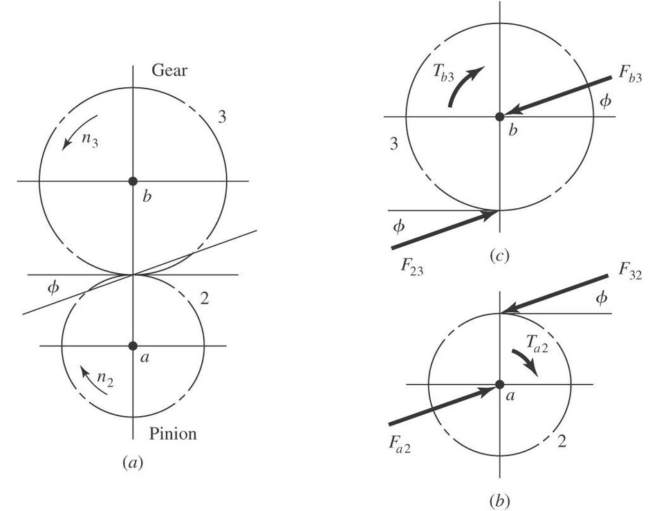
图 L5-1 齿面受力：法向力 $W_n$ 分解为切向 $W_t$ 与径向 $W_r$（$\phi$ 为压力角）（L5 课件）
1.2 功率、速度、载荷的关系
马力–转矩–转速（US）：
节线速度（pitch-line velocity）：
传递载荷：
【坑】SI 这条式子算出来是 kN，不是 N！课件专门提醒："be careful of units! That equation produced an answer in kN." 做题时先写 $W_t=0.546$ kN，再换成 546 N 代入强度公式。
1.3 推导（30 秒）
把 $P$ 用 kW、$d$ 用 mm 代入，系数就是 $60000/\pi$，量纲落在 kN。
1.4 例题：例 13-7（课件 13–16 页）
已知：$m=2.5$ mm、$z_2=20$（主动）、$z_3=50$、$P=2.5$ kW、$n=1750$ rpm、$\phi=20^\circ$。
(1) 分度圆
(2) 传递载荷
(3) 径向力与法向力
(4) 惰轮（gear 3）
惰轮不传递功率给轴（只改方向），所以两侧切向力大小相等：$F_{43}^{t}=F_{23}^{t}=0.546$ kN，$F_{43}^{r}=0.199$ kN。
(5) 轴承受力
把 $F^{t}$、$F^{r}$ 沿 $x,y$ 分解后求合力，再按跨距分配。例中：
【说明】符号来自"力平衡"，方向画对了自然就对；考试一定要画受力图（自由体图），标出 $W_t$ 的方向（主动轮与转向相反、从动轮与转向相同）。
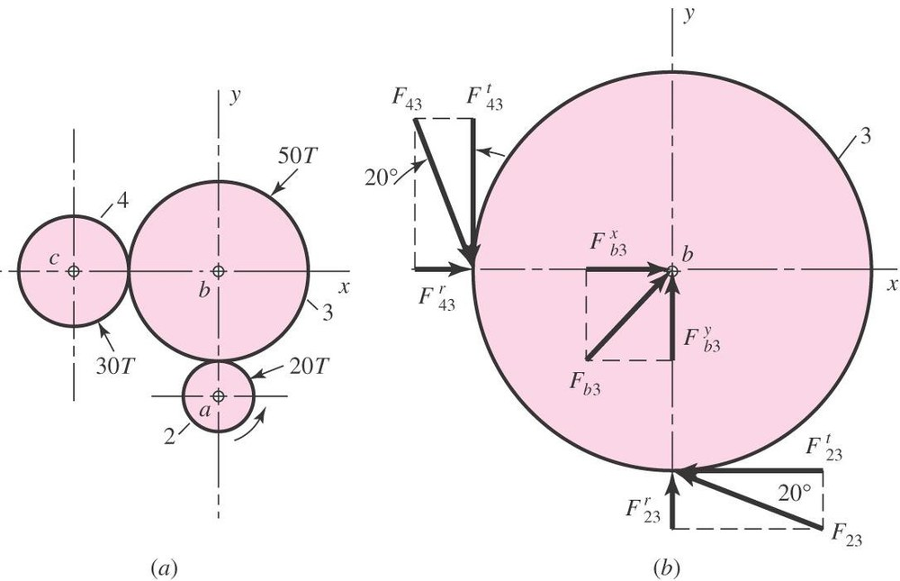
图 L5-2 三齿轮轮系的受力方向（例 13-7 的 Fig. 13-34）：惰轮两侧切向力等大反向（L5 课件）
1.5 轴承径向载荷（期末 Q11 的思路）
若两轴承对称布置、各承担一半：
2 失效模式
2.1 两类失效（课件 24 页）
【课件】"Gears fail when actual loads applied to teeth are greater than allowable loads."
- 轮齿折断（tooth fracture）：弯曲应力超过许用 → 突然、彻底失效；
- 齿面失效（surface failure / wear / pitting）：接触应力导致点蚀、剥落 → 渐进失效。
2.2 惰轮为什么最先坏（课件 1–3 页）
【课件】"The idler gear, because the teeth are being bent in both directions instead of just one direction. In other words, they experience reversed loading."
- 主动轮、从动轮的齿根弯曲应力是单向脉动（0 → max → 0）；
- 惰轮同时与两侧啮合，齿根先受一侧弯曲、再受另一侧弯曲 → 对称循环（reversed）；
- 同样的应力幅下，对称循环的疲劳寿命远低于脉动循环 → 惰轮先断。
图 L5-3 主动轮—惰轮—从动轮：惰轮轮齿两次受力方向相反（对称循环）（L5 课件）
2.3 为什么"齿面故意设计得比齿根弱"（课件 21–22 页）
【课件】"Gear teeth are typically designed to be weaker in wear than in bending. Why?"
- 磨损/点蚀是渐进的，会先出现噪声、振动，给出预警；
- 弯曲折断是突然的，整台机器可能瞬间失效、飞出碎片；
- 所以设计上让"先坏的那一环"是可控的、有预警的（fail-safe 思想）。
2.4 其他失效原因（课件 25–29 页）
- 齿根圆角不足、热处理不当 → 弯曲疲劳裂纹源；
- 轴系不对中（misalignment） → 齿面偏载，一端先点蚀/折断；
- 循环过载（cyclic overload）→ AGMA 标准里有专门的过载系数；
- 润滑不良 → 胶合、磨损。
3 弯曲强度：Lewis 公式
3.1 模型（课件 31 页）
把轮齿看成一端固定的悬臂梁：
- 载荷 $W_t$ 作用在齿顶（最不利），沿齿宽 $b_f$ 均布；
- 危险截面在齿根（抛物线内切）；
- 实际齿形与理想抛物线不同 → 用齿形系数 $Y$ 修正。
其中 $P_d$ 为径节、$m$ 为模数、$Y$ 为 Lewis 齿形系数（查表）；$M_b$ 是齿根弯矩、$y$ 是到中性轴的距离、$I_z$ 是截面惯性矩（都是悬臂梁模型里的量）。
【记忆】$Y$ 越大（齿数越多）→ 同样载荷下应力越小。齿条（$z\to\infty$）的 $Y$ 最大。
图 L5-4 悬臂梁模型：把轮齿看成齿根固定的悬臂梁，载荷作用在齿顶（L5 课件）
图 L5-5 抛物线内切齿廓：用齿形系数 $Y$ 修正实际齿形与理想抛物线的差别（L5 课件）
3.2 完整公式（含速度系数）
US 单位（$\sigma$ psi，$W_t$ lbf，$b_f$ in，$P_d$ teeth/in）：
SI 单位（$\sigma$ MPa，$W_t$ N，$b_f,m$ mm）：
3.3 速度系数 $K_v$（动载系数）
速度越高，冲击与动载越大，用 $K_v>1$ 放大应力。按加工方式选取（课件 34–35 页，Shigley Eq. 14-4～14-6）：
| 加工方式 | US（$V$ 单位 ft/min） | SI（$V$ 单位 m/s） |
|---|---|---|
| 铸铁、铸造齿形 | $\dfrac{600+V}{600}$ | $\dfrac{3.05+V}{3.05}$ |
| 切削/铣齿 | $\dfrac{1200+V}{1200}$ | $\dfrac{6.1+V}{6.1}$ |
| 滚齿/插齿 | $\dfrac{50+\sqrt{V}}{50}$ | $\dfrac{3.56+\sqrt{V}}{3.56}$ |
| 剃齿/磨齿 | $\sqrt{\dfrac{78+\sqrt{V}}{78}}$ | $\sqrt{\dfrac{5.56+\sqrt{V}}{5.56}}$ |
【说明】精度越高、$K_v$ 越接近 1（动载小）；题目没说加工方式时，用"切削/铣齿"或"滚齿"并在卷面注明假设。两套单位的公式不能混用（$V$ 的单位不同）。
3.4 Lewis 齿形系数 $Y$（20° 全齿高，节选）
| $z$ | 12 | 14 | 16 | 18 | 20 | 22 | 24 | 26 | 28 | 30 |
|---|---|---|---|---|---|---|---|---|---|---|
| $Y$ | 0.245 | 0.277 | 0.296 | 0.309 | 0.322 | 0.331 | 0.337 | 0.346 | 0.353 | 0.359 |
| $z$ | 34 | 36 | 38 | 40 | 45 | 50 | 更大 | 齿条 |
|---|---|---|---|---|---|---|---|---|
| $Y$ | 0.371 | 0.377 | 0.383 | 0.389 | 0.399 | 0.409 | 查表，趋近 0.48 | $\approx0.485$ |
【坑】表值对应 20° 全齿高；若题目给 25° 或短齿，$Y$ 不同。考试若只给 $z$ 不给表，通常允许用近似值或直接给 $Y$。
图 L5-6 Lewis 齿形系数 $Y$（20° 全齿高，Shigley 表 14-2）：齿数越多 $Y$ 越大（L5 课件）
3.5 例题 1：求最小齿宽（Prob. 14-5）
已知：钢制直齿小齿轮，$m=1$ mm，$z=16$，$20^\circ$ 全齿高，传递 $P=0.15$ kW、$n=400$ rpm，许用弯曲应力 $150$ MPa（已含安全系数）。求最小齿宽 $b_f$。
按滚齿/插齿取 $K_v=\dfrac{3.56+\sqrt{0.335}}{3.56}=1.163$；$Y(16)=0.296$。
由 $\sigma=\dfrac{K_vW_t}{FmY}\le150$：
圆整取 $b_f=12$ mm。
【说明】若按"切削/铣齿"取 $K_v=1.055$，则 $b_f\ge10.6$ mm；若按"铸铁铸造"取 $K_v=1.11$，则 $b_f\ge11.2$ mm。加工方式影响 10% 左右，所以必须写清假设。齿宽一般还要求 $b_f=(6\text{–}12)m$，本题 $12m$ 刚好在上限。
3.6 例题 2：仿期末题（$W_t$ 由转矩给）
已知：小齿轮 $d=40$ mm（$m=2$、$z=20$）、$n=500$ rpm、传递 $0.5$ kW、滚齿、$\phi=20^\circ$、许用弯曲应力 $120$ MPa。求最小齿宽。
取 $b_f=8$ mm（$=4m$，偏窄，工程上常取 $8\text{–}10$ mm）。
【说明】2023 期末 Q10 给的是 $T_m=10$ mNm、$\omega_m=100$ rpm、$d_p=20$ mm、$m=1$ 这种"轻载"数据，算出的 $W_t=T/r=10/10=1$ N，按公式算出的 $b_f$ 只有零点几毫米。这不是算错，而是说明轻载下齿宽由结构/工艺决定，不由强度决定——答题时写一句"强度不控制，取结构最小值"即可。
4 接触强度（齿面点蚀）
图 L5-7 齿面磨损/点蚀的宏观形貌：渐进失效，先出现噪声（L5 课件）
4.1 Hertz 模型（课件 43 页）
把两齿面在节点处的接触看成两个圆柱体受压，最大接触应力在表面下：
弹性系数（由两材料 $E,\nu$ 决定）：
4.2 接触应力公式（课件 44 页）
- 负号表示压应力；
- $\sigma_C\propto\sqrt{W_t}$（与载荷的平方根成正比，不是线性！）；
- $d$ 越大 → $\rho_1,\rho_2$ 越大 → 应力越小，所以"抗点蚀看直径"。
4.3 例题：例 14-3（课件 45–47 页）
已知：
| 项目 | 小齿轮（AISI 1020 钢） | 大齿轮（ASTM #50 铸铁，铣齿） |
|---|---|---|
| $E$ | 30 Mpsi | 14.5 Mpsi |
| $\nu$ | 0.292 | 0.211 |
| 表面耐久强度 $S_C$ | — | 83.8 kpsi |
$P_d=8$ teeth/in、$z_p=16$、$z_g=50$、$\phi=20^\circ$、$n_p=1200$ rpm、$W_t=382$ lbf、$b_f=1.5$ in。
(1) 分度圆
(2) 曲率半径
(3) 弹性系数
(4) 速度系数（切削齿，$V=\pi d n/12=\pi\times2\times1200/12=628$ ft/min）
(5) 接触应力（课件解答中 $W_t$ 取 380 lbf，这里照用）
(6) 安全系数
铸铁表面耐久强度估算：
因为接触应力与载荷的平方根成正比，载荷比 = 应力比的平方：
【说明】这是"用应力比算安全系数"的标准做法：$n_s=(\text{许用}/\text{实际})^2$ 只适用于接触应力（$\sqrt{}$ 关系）；弯曲应力是线性的，$n_s=\sigma_{\text{allow}}/\sigma$。
5 AGMA 方法（不考，但要"知道有它"）
【课件】"We will not ask you about this method on the exam, but you should be aware of it."
- 两个失效模式：弯曲 + 接触；
- 引入一系列修正系数（过载、尺寸、载荷分布、动载、温度、可靠性、表面状态……）；
- 表格默认：$10^7$ 循环、99% 可靠性；
- 使应力增大的因素：冲击与振动、更高速度、大尺寸材料的性能不均、不对中、薄轮缘；
- 使许用应力降低的因素：循环次数多、温度高、可靠性要求高。
【说明】这条只出选择题/简答题，记住"两模式 + 一堆修正系数 + 10⁷ 循环 + 0.99 可靠度"。
6 设计准则：先弯还是先接？
| 齿轮类型 | 主要失效 | 设计顺序 |
|---|---|---|
| 闭式软齿面（≤350 HB） | 点蚀 | 先按接触强度定 $d$，再校核弯曲 |
| 闭式硬齿面（>350 HB） | 折断 | 先按弯曲强度定 $m$，再校核接触 |
| 开式齿轮 | 磨损 | 按弯曲强度定 $m$，并加大模数补偿磨损 |
【记忆】"抗点蚀看直径，抗折断看模数"：加大 $d$ 降低接触应力，加大 $m$ 降低弯曲应力。
7 与 L4 的衔接
- L4 定几何（$m,z,d,C$）；
- L5 定齿宽 $b_f$ 与材料/热处理（弯曲 + 接触校核）；
- 两者联立才是完整设计：先由传动比定 $z$，由弯曲强度初定 $m$，由接触强度校核 $d$，最后回到 L4 出图。
- 左：法向力 $W_n$ 分解为 $W_t$、$W_r$，压力角 $\phi$ 决定二者比例；
- 右：四种加工方式的 $K_v$–$V$ 曲线（SI），精度越高动载越小。
8 易错点清单
- $W_t$ 是切向力，$W_r=W_t\tan\phi$ 只给轴承，不参与弯曲强度。
- SI 的 $W_t=60000H/(\pi dn)$ 结果是 kN，代入 $\sigma$ 公式前乘 1000。
- 弯曲公式里是 $m$（SI）或 $P_d$（US），两者互为倒数，别同时用。
- $K_v$ 的两套单位公式不能混（ft/min vs m/s）。
- $Y$ 查表对应 20° 全齿高，齿数越多 $Y$ 越大。
- 接触应力与 $\sqrt{W_t}$ 成正比，安全系数要平方。
- 接触应力取负号只是表示压应力，比较时用绝对值。
- 惰轮是对称循环弯曲，比主动轮/从动轮更容易疲劳。
- 齿面设计得比齿根弱是故意的（渐进失效有预警）。
- AGMA 不考公式，但要知道它有两个失效模式和一堆修正系数。
9 自测（5 分钟）
- $W_t=500$ N、$\phi=20^\circ$，求 $W_r$ 和 $W_n$。
- 传递 $1.5$ kW、$d=60$ mm、$n=900$ rpm，求 $W_t$（kN）与节线速度（m/s）。
- $m=2$、$z=25$、$b_f=20$ mm、$W_t=800$ N、$K_v=1.2$，求弯曲应力（$Y$ 查表）。
- 接触应力算得 600 MPa、许用 900 MPa，安全系数是多少？若载荷加倍，应力变多少？
- 为什么惰轮最容易发生弯曲疲劳断裂？
答案见《08 模拟卷答案》附录。
公式速查卡（按 L1–L5 排列，考前 30 分钟看这一份）
符号与正文一致：传动比 $u$、齿数 $z$、径节 $P_d$、周节 $p_c$、齿宽 $b_f$、中心距 $a_w$、顶隙 $h_c$、安全系数 $n_s$、弹性系数 $Z_E$、曲率半径 $\rho_1,\rho_2$、传动角 $\mu$、压力角 $\phi$。
建议打印成一页 A4 正反面。带 ★ 的是"闭眼也要写出来"的式子。
L1 机构与四杆基础
| 项目 | 公式 |
|---|---|
| ★ 自由度 | $M=3(L-1)-2J_1-J_2$ |
| 总自由度 / 总约束 | $3(L-1)$ / $2J_1+J_2$ |
| 传动角 | $\mu=\angle BCD$（取锐角）；$F$ 为连杆力，$F_t=F\sin\mu$，$F_r=F\cos\mu$ |
| 许用传动角 | $30^\circ\le\mu\le150^\circ$，工程 $[\mu]\ge40^\circ$ |
| ★ Grashof | $\ell_{\min}+\ell_{\max}<\ell_p+\ell_q$；$=$ 变向点；$>$ 非 Grashof |
| 类型 | 最短杆为连架杆→曲柄摇杆；为机架→双曲柄；为连杆→双摇杆 |
| 机械效益 | $MA=F_{out}/F_{in}=v_{in}/v_{out}$ |
L2 四杆分析与综合
| 项目 | 公式 |
|---|---|
| ★ 闭环方程 | $a e^{i\theta}+b e^{i\psi}=d+c e^{i\varphi}$ |
| 位置（几何法） | $BD^2=a^2+d^2-2ad\cos\theta$，$\cos\angle CBD=\dfrac{b^2+BD^2-c^2}{2bBD}$ |
| 位置（代数） | $\lambda_1\cos\varphi+\lambda_2\sin\varphi+\lambda_3=0$ |
| 系数 | $\lambda_1=2c(d-a\cos\theta)$，$\lambda_2=-2ac\sin\theta$，$\lambda_3=d^2+c^2+a^2-b^2-2ad\cos\theta$ |
| 解 | $t=\tan\dfrac{\varphi}{2}=\dfrac{-\lambda_2\pm\sqrt{\lambda_1^2+\lambda_2^2-\lambda_3^2}}{\lambda_3-\lambda_1}$，$\varphi=2\arctan t$ |
| ★ 速度 | $\omega_3=-\dfrac{a\omega_2\sin(\varphi-\theta)}{b\sin(\varphi-\psi)}$，$\omega_4=-\dfrac{a\omega_2\sin(\psi-\theta)}{c\sin(\varphi-\psi)}$ |
| 瞬心 | $\dfrac{\omega_3}{\omega_2}=\dfrac{P_{12}P_{23}}{P_{13}P_{23}}$ |
| ★ 二元组方程 | $W\left(e^{i\beta_j}-1\right)+Z\left(e^{i\alpha_j}-1\right)=\delta_j$ |
| 铰点还原 | $A_1=PP_1-Z$，$A_0=A_1-W$ |
| Freudenstein | $k_1\cos\varphi-k_2\cos\theta+k_3=\cos(\varphi-\theta)$ |
| 系数 | $k_1=\dfrac{d}{a}$，$k_2=\dfrac{d}{c}$，$k_3=\dfrac{d^2+c^2+a^2-b^2}{2ac}$ |
| 反解 | $d=k_1a$，$c=d/k_2$，$b=\sqrt{a^2+c^2+d^2-2ack_3}$ |
L3 电机与传动
| 项目 | 公式 |
|---|---|
| ★ 电机三式 | $E=K_b\omega$，$T=K_TI$，$V_s=E+IR$ |
| ★ 机械特性 | $T_m=\dfrac{V_sK_T}{R_a}-\dfrac{K_TK_b}{R_a}\omega=T_s\left(1-\dfrac{\omega}{\omega_0}\right)$ |
| 堵转 / 空载 | $T_s=\dfrac{V_sK_T}{R_a}$，$\omega_0=\dfrac{V_s}{K_b}$，$I_s=\dfrac{V_s}{R_a}$ |
| 斜率 | $-\dfrac{K_TK_b}{R_a}$（与电压无关） |
| 功率 / 效率 | $P=T\omega$，$\eta=\dfrac{P_{out}}{P_{in}}=\dfrac{\omega}{\omega_0}$（理想） |
| 最大功率点 | $\omega=\omega_0/2$，$T=T_s/2$，$P_{\max}=V_s^2/(4R)$ |
| ★ 传动比 | $u=\dfrac{\omega_m}{\omega_o}=\dfrac{r_o}{r_m}$（运动学，恒成立）；$T_o=u\eta T_m$，仅 $\eta=1$ 时 $T_o/T_m=u$ |
| 转速换算 | $\omega=\dfrac{2\pi n}{60}$，$T(\text{N·m})=9550\dfrac{P(\text{kW})}{n(\text{rpm})}$ |
| ★ 齿轮参数 | $d=mz$，$p_c=\pi m$，$P_d=z/d$，$m[\text{mm}]=25.4/P_d$，$d_b=d\cos\phi$ |
| 齿顶 / 齿根 | $d_a=d+2m$，$d_f=d-2.5m$ |
| ★ 中心距 | $a_w=\dfrac{m(z_1+z_2)}{2}$ |
| 重合度 | $\varepsilon=\dfrac{\sqrt{r_{a1}^2-r_{b1}^2}+\sqrt{r_{a2}^2-r_{b2}^2}-C\sin\phi}{\pi m\cos\phi}$ |
| 根切 | $z_{\min}=\dfrac{2h_a^*}{\sin^2\phi}\approx17$ |
| ★ 轮系 | $\dfrac{\omega_{in}}{\omega_{out}}=\dfrac{\prod z_{\text{driven}}}{\prod z_{\text{driving}}}$ |
| 外/内啮合 | 外：$\omega_b=-\omega_aN_a/N_b$；内：取正 |
| ★ 行星 | $\omega_s z_s+\omega_r z_r=\omega_c(z_r+z_s)$，$z_r=2z_p+z_s$ |
| 行星杠杆 | $\omega_c=\dfrac{z_s}{z_r+z_s}\omega_s+\dfrac{z_r}{z_r+z_s}\omega_r$ |
| 齿圈固定 | $u_{sc}=1+\dfrac{z_r}{z_s}$ |
| 太阳轮固定 | $u_{rc}=1+\dfrac{z_s}{z_r}$ |
| 系杆固定 | $u_{sr}=-\dfrac{z_r}{z_s}$ |
| 谐波 | $u_h=\dfrac{z_f}{z_g-z_f}=\dfrac{z_f}{2}$（刚轮固定，反向） |
L4 设计流程、材料、齿轮几何
| 项目 | 要点 |
|---|---|
| 设计流程 | 需求→调研→概念→筛选→详细设计→分析→样机→定型 |
| 选材指标 | 强度、刚度、密度、硬度、韧性、耐蚀、热膨胀、可加工性、成本 |
| 材料族 | 金属 / 陶瓷玻璃 / 高分子 / 复合材料 |
| 强度 vs 刚度 | $\sigma\le[\sigma]$（怕断） vs $\delta\le[\delta]$（怕变形，$E$ 决定） |
| 应力–应变 | $E=\sigma_y/\varepsilon_y$；$\sigma_y,\sigma_u,\sigma_f,\varepsilon_y,\varepsilon_u$ |
| 标准齿比例 | $h_a=m$，$h_f=1.25m$，$h_c=0.25m$，$h=2.25m$ |
| 模数换算 | $m[\text{mm}]=25.4/P$ |
| 齿宽经验 | $b_f=(6\text{–}12)m$ |
| 传动比分配 | 每级 $<10$，$u=\prod u_k$ |
L5 齿轮受力与强度
| 项目 | 公式 |
|---|---|
| ★ 分力 | $W_r=W_t\tan\phi$，$W_n=W_t/\cos\phi$ |
| 马力–转矩 | $HP=\dfrac{T\cdot RPM}{63025}$ |
| 节线速度 | $V=\dfrac{\pi dn}{60}$（m/s，$d$ 用 m） |
| ★ 传递载荷（US） | $W_t=33000\dfrac{H}{V}$（hp，ft/min，lbf） |
| ★ 传递载荷（SI） | $W_t=\dfrac{60000H}{\pi dn}$（kW，mm，rpm → kN） |
| ★ 弯曲（US） | $\sigma=\dfrac{K_vW_tP}{FY}$ |
| ★ 弯曲（SI） | $\sigma=\dfrac{K_vW_t}{FmY}$ |
| $K_v$（US） | 铸造 $\dfrac{600+V}{600}$；铣齿 $\dfrac{1200+V}{1200}$；滚齿 $\dfrac{50+\sqrt V}{50}$；磨齿 $\sqrt{\dfrac{78+\sqrt V}{78}}$ |
| $K_v$（SI） | $3.05$；$6.1$；$3.56$；$5.56$（形式同上，$V$ 用 m/s） |
| ★ 曲率半径 | $\rho_1=\dfrac{d_p\sin\phi}{2}$，$\rho_2=\dfrac{d_g\sin\phi}{2}$ |
| ★ 弹性系数 | $Z_E=\left[\dfrac{1}{\pi\left(\dfrac{1-\nu_p^2}{E_p}+\dfrac{1-\nu_g^2}{E_g}\right)}\right]^{1/2}$ |
| ★ 接触应力 | $\sigma_C=-C_p\left[\dfrac{K_vW_t}{F\cos\phi}\left(\dfrac{1}{r_1}+\dfrac{1}{r_2}\right)\right]^{1/2}$ |
| 接触安全系数 | $n_s=\left(\dfrac{S_C}{\sigma_C}\right)^2$ |
| 弯曲安全系数 | $n_s=\dfrac{\sigma_{\text{allow}}}{\sigma}$ |
| 铸铁 $S_C$ | $S_C\approx0.32H_B$ kpsi |
常用数值与常数
| 量 | 值 |
|---|---|
| $\sin20^\circ$ / $\cos20^\circ$ / $\tan20^\circ$ | 0.3420 / 0.9397 / 0.3640 |
| $\operatorname{inv}20^\circ$ | 0.01490 |
| $2\pi/60$ | 0.10472 |
| $60/(2\pi)$ | 9.5493 |
| 1 hp | 746 W = 33000 ft·lbf/min |
| 1 in | 25.4 mm |
| 1 Mpsi | 6.895 GPa |
| 1 kpsi | 6.895 MPa |
中英术语对照（英文卷必备）
| 中文 | English | 中文 | English |
|---|---|---|---|
| 机构 | mechanism | 运动简图 | kinematic diagram |
| 构件 / 运动副 | link / joint | 自由度 | degree of freedom (mobility) |
| 机架 | ground link / frame | 连杆 | coupler |
| 曲柄 / 摇杆 | crank / rocker | 滑块 | slider |
| 传动角 | transmission angle | 压力角 | pressure angle |
| 死点 / 变向点 | toggle / change point | 反演 | inversion |
| 圆点 / 圆心点 | circle point / center point | 精确点 | precision point |
| 刚体导引 | motion generation | 轨迹生成 | path generation |
| 函数生成 | function generation | 二元组 | dyad |
| 渐开线 | involute | 基圆 | base circle |
| 分度圆 | pitch circle | 模数 / 径节 | module / diametral pitch |
| 周节 | circular pitch | 齿顶高 / 齿根高 | addendum / dedendum |
| 顶隙 | clearance | 重合度 | contact ratio |
| 根切 | undercut | 轮系 | gear train |
| 行星轮 / 太阳轮 | planet / sun gear | 内齿圈 | ring gear |
| 系杆 | carrier | 谐波减速器 | harmonic drive |
| 柔轮 / 刚轮 | flexspline / circular spline | 波发生器 | wave generator |
| 轮齿折断 | tooth breakage | 点蚀 | pitting |
| 胶合 / 磨损 | scoring / wear | 疲劳 | fatigue |
| 传递载荷 | transmitted load | 节线速度 | pitch-line velocity |
| 齿宽 | face width | 齿形系数 | Lewis form factor |
| 带 / 链 | belt / chain | 滚子链 | roller chain |
| 正应力 / 切应力 | normal / shear stress | 屈服 / 抗拉 | yield / ultimate |
考场时间分配（100 分钟）
| 题型 | 时间 |
|---|---|
| 自由度 + 类型判断 | 12 分钟 |
| 四杆位置/速度 + 传动角 | 18 分钟 |
| 电机工作点 + 传动比 | 18 分钟 |
| 齿轮几何 + 轮系/行星 | 18 分钟 |
| 齿轮受力/弯曲/接触 | 18 分钟 |
| 材料/设计流程简答 | 8 分钟 |
| 检查与补公式 | 8 分钟 |
写计算题永远按"已知 → 公式 → 代入 → 结果 → 单位"五步；单位错是最常见的丢分点。
模拟卷（L1–L5，100 分 / 100 分钟）
按官方课件 L1–L5 与 2023 期末卷的题型结构编写。允许带一张 A4 手写公式纸。
计算题按"已知 → 公式 → 代入 → 结果 → 单位"五步写，公式分比结果分多。
答案见《08 模拟卷答案》。
一、自由度与机构基础（8 分）
1.（3 分） 铰链四杆机构（机架、曲柄、连杆、摇杆各 1 个，4 个转动副）：写出总自由度、总约束数，并求机构自由度 $M$。
2.（3 分） 凸轮 + 滚子摆杆机构，假设滚子与凸轮之间为纯滚动，求 $M$；若改为"从动件与输出焊成一体、凸轮副允许转动与滑动"，$M$ 又是多少？
3.（2 分） 某机构中三个构件共用一个销轴。若把它只记作 1 个 $J_1$，算出的 $M$ 会偏大多少？为什么？
二、四杆机构：类型、急回、传动角（12 分）
已知铰链四杆机构 $a=45$ mm、$b=110$ mm、$c=90$ mm、$d=120$ mm，其中 $a$ 为连架杆、$d$ 为机架，$\omega_2=10$ rad/s。
1.（4 分） 判断机构类型，并说明理由（写出 Grashof 判据的代入过程）。
2.（4 分） 求极位夹角 $\theta$ 与行程速比系数 $K$。
3.（4 分） 求最小传动角 $\mu_{\min}$，判断是否满足 $[\mu]=40^\circ$。
三、位置与速度分析（10 分）
同一机构，曲柄转角 $\theta=60^\circ$。
1.（5 分） 求连杆方位角 $\psi$ 与摇杆转角 $\varphi$（取图中 $C$ 在 $BD$ 上方的那一支，即 $\sigma=+1$）。
2.（5 分） 求 $\omega_3$、$\omega_4$ 与 $C$ 点速度 $v_C$ 的大小，并说明 $\omega_4$ 的转向。
四、图解法综合（10 分）
要求连杆上的两点 $A$、$B$ 依次经过三个位置：
| 位置 | $A$ | $B$ |
|---|---|---|
| 1 | $(0,\ 0)$ | $(100,\ 0)$ |
| 2 | $(40,\ 15)$ | $(120,\ 30)$ |
| 3 | $(70,\ 45)$ | $(160,\ 55)$ |
坐标单位 mm。
1.（5 分） 写出用图解法求固定铰 $A_0$、$B_0$ 的完整步骤（不必画图，但要说明作哪几条线、交点是什么）。
2.（2 分） 本题有多少个自由选择？分别来自哪里？
3.（3 分） 若求出的 $A_0$ 落在题目允许的机架区域之外，应如何调整？为什么？
五、直流电机与传动（10 分）
某永磁直流电机：额定电压 $V_s=18$ V，空载转速 $n_0=6000$ rpm，电枢电阻 $R_a=3\ \Omega$，$K_T=K_b=0.02865$ N·m/A（SI）。负载线（电机侧）为 $T_L=50+0.01\omega$（mNm，$\omega$ 单位 rad/s）。
1.（4 分） 求堵转转矩 $T_s$、机械特性斜率，以及直接驱动时的工作转速（rpm）、电流与效率。
2.（3 分） 若要求直接驱动时转速为 3000 rpm，需要多大电压？
3.（3 分） 改为经 $u=10$、$\eta=0.9$ 的减速器驱动同一负载线（负载线定义在负载端），求电机工作转速、输出转速与输出转矩。
六、齿轮几何与轮系（12 分）
1.（6 分） 一对标准直齿圆柱齿轮：$m=4$ mm，$z_1=18$，$z_2=45$，$\phi=20^\circ$，标准全齿高。求 $d_1,d_2,d_{a1},d_{a2},d_{f1},d_{f2},d_{b1},d_{b2}$ 与中心距 $a_w$。
2.（3 分） 求重合度 $\varepsilon_\alpha$，并说明它的物理意义。
3.（3 分） 某两级齿轮箱要求总传动比 $u=18$，每级传动比不超过 10。给出一组齿数分配（各齿轮取 $z\ge18$），并求总传动比。
七、行星轮系与谐波（10 分）
1.（6 分） 行星轮系：太阳轮 $z_s=24$、行星轮 $z_p=36$、内齿圈 $z_r=96$。太阳轮顺时针 1200 rpm，齿圈固定。求系杆转速与转向、行星轮转速与转向、该轮系的传动比。
2.（4 分） 谐波减速器：刚轮 $z_g=202$、柔轮 $z_f=200$，刚轮固定、波发生器输入、柔轮输出。求减速比，并说明输出转向。
八、齿轮受力与弯曲强度（12 分）
一对直齿圆柱齿轮：小齿轮 $m=2.5$ mm、$z_1=20$、$d_1=50$ mm、$n_1=1200$ rpm，传递功率 $P=0.75$ kW，压力角 $20^\circ$，齿宽 $b_f=25$ mm，滚齿加工，$Y=0.322$。
1.（4 分） 求节线速度 $V$、速度系数 $K_v$、传递载荷 $W_t$。
2.（3 分） 求径向力 $W_r$ 与法向力 $W_n$，并说明它们分别由什么零件承担。
3.（5 分） 求齿根弯曲应力 $\sigma$。若转速提高到 2400 rpm（功率不变），$K_v$ 与 $\sigma$ 各如何变化（定性 + 定量）。
九、设计流程与材料（8 分）
1.（3 分） 按正确顺序写出机械设计的 8 个步骤。
2.（2 分） "强度"与"刚度"有什么区别？各举一个以它为失效判据的例子。
3.（3 分） 某 PLA 零件：$E=2500$ MPa、$\sigma_y=50$ MPa、$\sigma_u=60$ MPa、$\sigma_f=45$ MPa、$\varepsilon_y=2\%$、$\varepsilon_u=5\%$。画出工程应力–应变折线示意图（标出全部数值），并验算 $E$ 与 $\sigma_y,\varepsilon_y$ 是否自洽。
十、简答（8 分，每题 2 分）
- 为什么齿轮齿廓必须用渐开线？"矩形齿"会出什么问题？
- 同一齿轮箱里，为什么惰轮最容易发生弯曲疲劳断裂？
- 为什么齿轮的齿面通常被设计得比齿根"弱"（更容易磨损）？
- 既然提高电压就能提高转速，为什么还需要减速器？
参考答案见《08 模拟卷答案》。先限时做完再看。
模拟卷答案与评分要点
每题给"关键步骤 + 数值结果"。考试时步骤分比结果分多，以下每一条都可以单独得分。
一、自由度与机构基础（8 分）
1.（3 分） $L=4$，$J_1=4$，$J_2=0$。
- 总自由度：$3(L-1)=3\times3=9$；
- 总约束数：$2J_1+J_2=8$；
- $M=9-8=1$。
2.（3 分）
- 纯滚动（滚子与凸轮无滑动）：$L=4$、$J_1=4$、$J_2=0$ → $M=3\times3-8=1$；
- 从动件与输出焊成一体、凸轮副允许转+滑：$L=3$、$J_1=2$、$J_2=1$ → $M=6-4-1=1$。
两种假设答案相同（1 个自由度），但建模不同，卷面必须写清假设。
3.（2 分） 偏大 2。三个构件共销实际上是两两成副，应记 2 个 $J_1$（去掉 4 个约束）；只记 1 个只去掉 2 个约束，所以 $M$ 多算 2。
二、四杆机构：类型、急回、传动角（12 分）
1.（4 分）
最短杆 $a=45$ 是连架杆 → 曲柄摇杆机构（$a$ 为曲柄，$c$ 为摇杆）。
2.（4 分） 极限位置时曲柄与连杆共线：
3.（4 分） $\mu_{\min}$ 在曲柄与机架共线处：
三、位置与速度分析（10 分）
1.（5 分）
取 $\sigma=+1$ 支路（图示上装），$t=1.0006$：
2.（5 分）
$\omega_4>0$ 表示与 $\theta$ 增大方向相同；若图示 $\theta$ 为逆时针，则摇杆也逆时针。
四、图解法综合（10 分）
1.（5 分）
- 连 $A_1A_2$、$A_1A_3$，分别作两条中垂线；
- 两中垂线交点即固定铰 $A_0$（$A$ 点绕 $A_0$ 作圆弧，圆心必在两条中垂线上）；
- 连 $B_1B_2$、$B_1B_3$，同法得 $B_0$；
- 连 $A_1A_0$、$B_1B_0$ 得两连架杆，$A_1B_1$ 为连杆；
- 检查 $A_0,B_0$ 是否在允许区域内，并保留作图线。
2.（2 分） 4 个自由选择：$A$、$B$ 两个动铰在连杆上的位置各 2 个（$x,y$）。固定铰由交点唯一确定，没有自由选择。
图（自绘）Q4 的作图结果：$A_1A_2A_3$ 与 $B_1B_2B_3$ 各自的外接圆，圆心就是固定铰
3.（3 分） 本题坐标算出的结果为 $A_0\approx(-14.5,\ 99.5)$、$B_0\approx(190.9,\ -38.9)$——两个固定铰都远远落在点群之外，说明所选的动铰位置不合适，必须重新选动铰位置（改那 4 个自由选择）再做一次；因为固定铰的位置完全由"动铰三位置所确定的圆"决定，动铰一改，圆心就跟着变。也可退而求其次：固定一端（只做 2 位置导引）或允许第三位置有小误差。
五、直流电机与传动（10 分）
1.（4 分）
（也等于 $\omega/\omega_0=429.8/628.3$。）
2.（3 分） $\omega=314.16$ rad/s 时 $T_L=50+3.14=53.14$ mNm：
3.（3 分） 折算到电机侧：
（与负载线 $50+0.01\times60.8=50.6$ mNm 基本一致，差值来自四舍五入。）
六、齿轮几何与轮系（12 分）
1.（6 分）
| 量 | 小齿轮 | 大齿轮 |
|---|---|---|
| $d=mz$ | 72 | 180 |
| $d_a=d+2m$ | 80 | 188 |
| $d_f=d-2.5m$ | 62 | 170 |
| $d_b=d\cos20^\circ$ | 67.66 | 169.14 |
2.（3 分）
物理意义：同时参与啮合的轮齿对数平均为 1.63；$\varepsilon_\alpha>1$ 才能连续传动，越大越平稳。
3.（3 分） $18=3\times6$：第一级 $z_1=18$、$z_2=54$（$i_1=3$）；第二级 $z_3=18$、$z_4=108$（$i_2=6$）。总传动比 $3\times6=18$，每级均小于 10。
七、行星轮系与谐波（10 分）
1.（6 分） 校核：$z_r=2z_p+z_s=2\times36+24=96$ ✓。
按行星轮反号约定，实际转向与太阳轮相反 → 逆时针 400 rpm。
2.（4 分）
刚轮固定、波发生器输入、柔轮输出时，输出转向与波发生器相反。
八、齿轮受力与弯曲强度（12 分）
1.（4 分）
2.（3 分）
$W_t$ 传递转矩、使轮齿受弯；$W_r$ 与 $W_n$ 的径向分量由轴与轴承承担（对弯曲强度影响可忽略）。
3.（5 分）
转速翻倍时：
功率不变则 $W_t'=W_t/2=119.4$ N：
即 $K_v$ 上升约 14%，但因 $W_t$ 减半，弯曲应力下降约 43%。结论：同一功率下提高转速反而降低齿根弯曲应力（所以高速级用小模数、低速级用大模数）。
九、设计流程与材料（8 分）
1.（3 分） 需求规格 → 调研与对标 → 概念生成 → 概念筛选 → 详细设计 → 建模与分析 → 样机与试验 → 定型。
2.（2 分）
- 强度：抗破坏/屈服的能力，指标 $\sigma_y$、$\sigma_u$（MPa），判据 $\sigma\le[\sigma]$，例子：螺栓被拉断；
- 刚度：抗变形的能力，指标 $E$（MPa）或 $k=F/\delta$，判据 $\delta\le[\delta]$，例子：机床床身变形导致精度超差。
3.（3 分） 折线：$(0,0)\to(2\%,\ 50)\to(5\%,\ 60)\to(5\%,\ 45)$。
- 弹性段斜率 $E=\dfrac{50}{0.02}=2500$ MPa，与题给 $E$ 自洽；
- 屈服点 $(2\%,\ 50)$、抗拉点 $(5\%,\ 60)$、断裂点 $(5\%,\ 45)$；
- 延伸率 5%，属于塑性材料；曲线下面积代表韧性。
十、简答（8 分）
- 渐开线：啮合点公法线始终是两基圆的公切线，与连心线交点（节点）固定 → 瞬时传动比恒定（共轭啮合），且中心距有误差时传动比不变。矩形齿的法线方向随啮合位置变化，交点不固定 → 传动比波动、卡死或回差大。
- 惰轮：同时与两侧啮合，轮齿先受一侧弯曲、再受另一侧弯曲，是对称循环载荷；主动轮/从动轮是单向脉动。同样应力幅下对称循环的疲劳寿命低得多。
- 齿面故意弱：磨损/点蚀是渐进的，会通过噪声、振动给出预警；弯曲折断是突发的、灾难性的。让"先失效的一环"可预警，是 fail-safe 设计思想。
- 为什么还要减速器：靠降压降速会使电流剧增，铜耗 $I^2R$ 按平方增长、效率骤降、散热困难；减速器让电机留在高速小转矩的高效区，再把转速换成转矩，代价只是减速器本身的效率损失。
附录：各章自测答案
L1 自测
- $L=6$、$J_1=7$：总自由度 $3\times5=15$，总约束 $2\times7=14$，$M=1$。
- 偏大 2（三个构件共销应为 2 个 $J_1$）。
- $\ell_{\min}+\ell_{\max}=40+80=120<90+70=160=\ell_p+\ell_q$ → Grashof；最短杆 $a$ 为连架杆 → 曲柄摇杆。
- $BD=d-a=40$：$\cos\angle BCD=\dfrac{90^2+70^2-40^2}{2\times90\times70}=0.9048\to25.2^\circ$；$BD=d+a=120$：$\cos\angle BCD=-0.1111\to96.4^\circ\to83.6^\circ$。$\mu_{\min}=25.2^\circ<40^\circ$，不合格，需加长机架或调整杆长。
- 输入与连杆共线时，输出构件速度为零（处于极限位置），由 $MA=v_{in}/v_{out}$ 知机械效益趋于无穷；连杆与输出共线时 $\mu=0$，连杆力全部沿输出杆、力臂为零，无法产生转矩，且从该位置出来时方向不确定（死点）。
L2 自测
- $a e^{i\theta}+b e^{i\psi}=d+c e^{i\varphi}$；对给定 $\theta$，$C$ 点是以 $B$ 为圆心、$b$ 为半径的圆与以 $D$ 为圆心、$c$ 为半径的圆的交点，两圆一般有两个交点 → 两条装配支路。
- $\varphi=89.56^\circ$（$\sigma=+1$，$t=0.9924$）。
- 未知数 6（$W$、$Z$ 各 2 个实分量 + $\beta_2,\beta_3$），方程 4，自由选择 2；通常固定 $\beta_2,\beta_3$。
- $W=\det(A)/\det(C)$、$Z=\det(B)/\det(C)$，其中 $A,B,C$ 见正文；$A_1=PP_1-Z$，$A_0=A_1-W$。
- 19 个未知数、30 个标量方程（20 个目标点方程 + 10 个闭环方程）。
L3 自测
- $K_b=\dfrac{12}{6000\times2\pi/60}=\dfrac{12}{628.3}=0.0191$ V·s/rad。
- $T_s=\dfrac{0.0191\times12}{2}=0.1146$ N·m；$I_s=\dfrac{12}{2}=6$ A。
- $d=36/108$ mm，$d_a=40/112$ mm，$d_f=31/103$ mm，$a_w=72$ mm，$u=3$。
- $u=(60/20)\times(72/18)=3\times4=12$。
- $z_r=2z_p+z_s=2\times36+24=96$ ✓；$u=1+z_r/z_s=1+96/24=5$；系杆 $1200/5=240$ rpm，与太阳轮同向。
L4 自测
- 需求 → 调研 → 概念生成 → 概念筛选 → 详细设计 → 分析 → 样机试验 → 定型。
- 不变形看刚度（$E$）；不断看强度（$\sigma_y,\sigma_u$）。
- $\delta\propto1/E$：$200/70\approx2.86$ 倍。
- $d=60/150$ mm，$d_a=65/155$ mm，$d_f=53.75/143.75$ mm，$a_w=105$ mm，$u=2.5$。
- $12=3\times4$：$z_1=20,z_2=60$（3），$z_3=18,z_4=72$（4）。
L5 自测
- $W_r=500\tan20^\circ=182$ N；$W_n=500/\cos20^\circ=532$ N。
- $W_t=\dfrac{60000\times1.5}{\pi\times60\times900}=0.531$ kN；$V=\dfrac{\pi\times0.06\times900}{60}=2.83$ m/s。
- $Y(25)\approx0.341$（24 齿 0.337、26 齿 0.346 之间插值）；$\sigma=\dfrac{1.2\times800}{20\times2\times0.341}=70.4$ MPa。
- $n_s=(900/600)^2=2.25$；载荷加倍时 $\sigma_C$ 变 $\sqrt2$ 倍 = 849 MPa，$n_s=(900/849)^2=1.12$。
- 惰轮齿根承受对称循环弯曲（两侧轮流啮合），疲劳寿命最低。
附录：带传动与链传动（L6 内容，超出 L1–L5，仅供参考）
说明：官方 L1–L5 课件里，带与链只出现在 L3 最后几页（作为"其他传动形式"），
带的设计计算（欧拉公式、包角、应力）按课程大纲属于 L6：Belts, bearings 1。
之所以保留这一份，是因为 L5 的标题写了 "(Belts Design)"，且带/链常作为综合题或附加题出现。
若考试范围严格限定 L1–L5，本附录只需看第 3 节的"三种传动对比"。
1 带传动
1.1 四种带
| 类型 | 原理 | 特点 | 场合 |
|---|---|---|---|
| 平带 | 摩擦 | 简单、允许大中心距、传动比小 | 低速、大中心距 |
| V 带 | 楔形摩擦 | 承载大、最常用 | 一般机械 |
| 多楔带 | 楔形摩擦 | 柔性好、高速、多轴 | 汽车、机床 |
| 同步带 | 齿形啮合 | 无滑动、传动比准确 | 数控、打印机 |
V 带的当量摩擦系数：
1.2 受力：紧边、松边、欧拉公式
联立得最大有效拉力：
想多传力：增大初拉力 $F_0$、增大包角 $\alpha$、增大摩擦系数 $f$。包角小于 $120^\circ$ 时先改中心距或加张紧轮。
1.3 应力与失效
| 应力 | 公式 | 说明 |
|---|---|---|
| 拉应力 | $\sigma_1=F_1/A$，$\sigma_2=F_2/A$ | 紧边大于松边 |
| 离心拉应力 | $\sigma_c=qv^2/A$ | $q$ 为单位长度质量，高速不可忽略 |
| 弯曲应力 | $\sigma_b=2Ey/d$ | 带轮越小弯曲越厉害 |
两种失效：打滑（过载、摩擦不足，应避免）、疲劳破坏（脱层、撕裂、拉断）。设计准则：不打滑前提下有足够疲劳寿命。
1.4 弹性滑动 vs 打滑（简答必考）
| 弹性滑动 | 打滑 | |
|---|---|---|
| 原因 | 紧边、松边弹性变形不同 | 过载，摩擦力不足 |
| 性质 | 不可避免 | 可以避免，也应避免 |
| 范围 | 局部、微量 | 全面滑动 |
| 后果 | 传动比不准确（约 1%–2%） | 剧烈发热、磨损，传动失效 |
1.5 几何
1.6 例题
$d_1=100$ mm、$d_2=400$ mm、$a=600$ mm、$n_1=1450$ rpm、$P=4$ kW、$f_v=0.51$、$\varepsilon=0.01$。
2 链传动
2.1 运动与传动比
2.2 多边形效应（必考简答）
链条在链轮上呈正多边形，铰链中心沿多边形边运动，所以：
- 瞬时链速周期性波动（周期 $360^\circ/z_1$）；
- 瞬时传动比随之波动；
- 产生冲击、振动、噪声，齿数越少越严重。
对策：小链轮 $z_1\ge17$（常用 19–25）、$z_2\le114$；链节数取偶数（避免过渡链节）；高速选小节距、多齿数。
2.3 几何
一般 $a=(30\text{–}50)p$，最大不超过 $80p$。
2.4 失效与设计
| 失效 | 场合 | 措施 |
|---|---|---|
| 链板疲劳断裂 | 闭式、高速 | 减小节距、提高精度 |
| 滚子/套筒疲劳 | 高速 | 润滑、选高质量链 |
| 销轴与套筒磨损 | 开式、有尘（主要失效） | 润滑、防尘、张紧适中 |
| 胶合 | 高速重载、润滑不良 | 改善润滑、限制速度 |
| 静强度拉断 | 低速重载、冲击 | 增大链号、减小冲击 |
设计准则：一般按耐磨设计；高速链按疲劳强度设计。润滑：人工刷油 → 滴油 → 油浴 → 喷油。
2.5 例题
$z_1=19$、$z_2=57$、$p=12.7$ mm、$n_1=1000$ rpm、$a=40p=508$ mm。
3 三种传动对比（L3 已给，背这张表）
| 项目 | 带 | 链 | 齿轮 |
|---|---|---|---|
| 传动比准确性 | 有弹性滑动 | 平均准确、瞬时波动 | 准确 |
| 中心距 | 大、可调 | 较大、可调 | 小、固定 |
| 缓冲吸振 | 好 | 一般 | 差 |
| 过载保护 | 打滑（有） | 无 | 无 |
| 效率 | 0.90–0.95 | 0.95–0.98 | 0.97–0.99 |
| 环境 | 怕油、怕高温 | 耐油、耐尘 | 需润滑密封 |
记忆：带怕油、链怕尘、齿轮怕脏；带能保命（过载打滑），链能扛（承载大），齿轮能准（传动比准）。